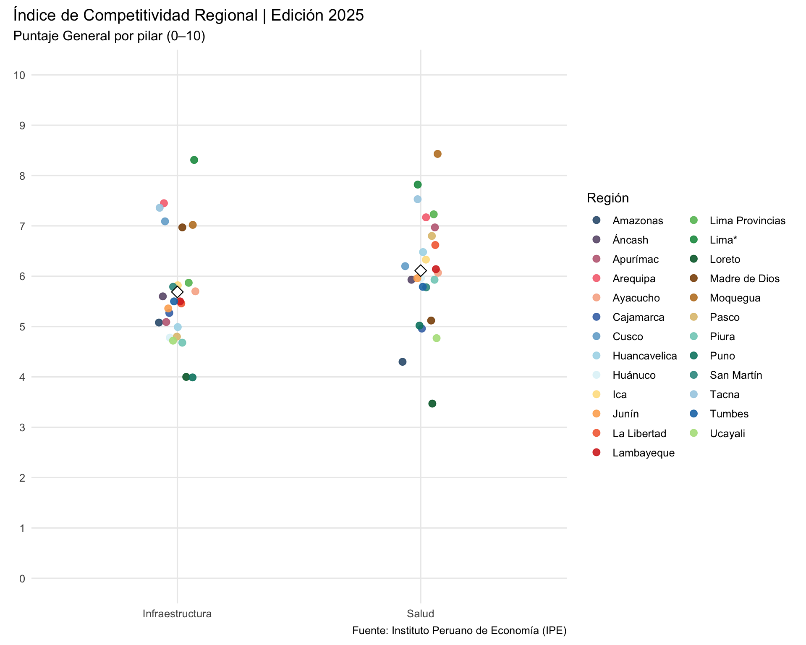
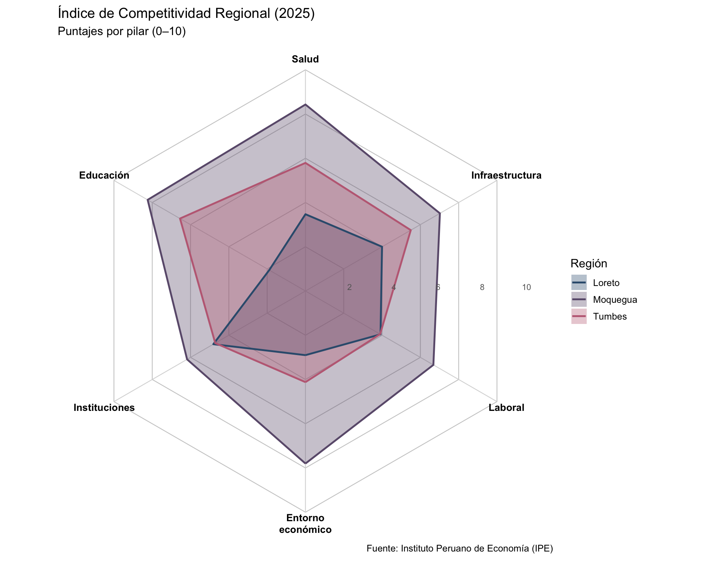
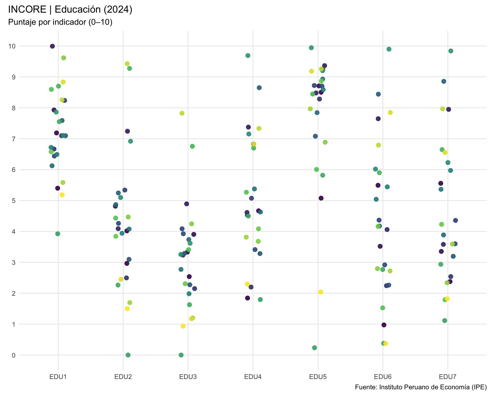

library(incorer)
library(dplyr)Manual de Aplicación del Paquete INCORER
Índice de Competitividad Regional (IPE)
1 Introducción
El Índice de Competitividad Regional (INCORE), elaborado por el Instituto Peruano de Economía (IPE), surge como una herramienta para comprender cómo distintos pilares (económicos, sociales e institucionales) interactúan en un proceso dinámico que busca elevar el bienestar de la población. El índice parte de la premisa de que la competitividad regional es un círculo virtuoso: el fortalecimiento de las capacidades de las regiones mejora la productividad, lo que incrementa los estándares de vida y, a su vez, refuerza dichas capacidades en el tiempo.
En ese marco, el INCORE organiza información heterogénea en una escala común de 0 a 10, permitiendo comparar regiones y evaluar la relación de la competitividad con variables clave como el producto per cápita o la pobreza monetaria. Esta mirada integra el desempeño económico, la calidad de las instituciones, el acceso a infraestructura, la salud y educación, entre otros factores.
El paquete INCOREr no está afiliado institucionalmente al IPE, pero surge inspirado en esta iniciativa. Su desarrollo responde a la necesidad de contar con una herramienta práctica en R que facilite integrar, manipular y explorar la base de datos oficial del INCORE sin depender de procesos manuales. Así, académicos, estudiantes e investigadores pueden trabajar con los resultados de manera reproducible, confiable y flexible, incorporándolos directamente en sus flujos de análisis cuantitativo o en la construcción de reportes dinámicos.
El paquete busca ser una interfaz activa entre la información publicada por el IPE y las necesidades de la investigación aplicada. Esto se traduce en funciones que estandarizan la lectura de archivos, permiten filtrar por ediciones, pilares o indicadores, y ofrecen salidas listas para ser graficadas o tabuladas. Asimismo, el paquete organiza las diferentes unidades de medida, diferencia puntajes estandarizados de valores originales y provee utilitarios que simplifican tareas comunes como la selección de regiones, la comparación temporal o la exportación de resultados.
En esencia, el paquete organiza toda la información del INCORE, ediciones, pilares, indicadores, regiones y unidades, en funciones que permiten:
- Importar y estructurar datos
leer_incore(): lee la base central del índice para una edición específica.
leer_total(): carga la base completa con todas las ediciones y valores originales.
Estas funciones devuelven los datos en formato tibble, listos para ser procesados en R.
- Navegar catálogos
- Funciones como
catalogo_regiones(),catalogo_pilar(),catalogo_indicador()ycatalogo_unidad()devuelven los diccionarios oficiales de referencia, permitiendo traducir entre nombres y códigos.
- Funciones como
- Explorar resultados generales
- La familia
general_genera gráficos y tablas del índice en su dimensión más agregada: el puntaje general por región o el general de cada pilar.
Ejemplos:general_tabla(),general_barras(),general_mapa().
- La familia
- Analizar indicadores específicos (puntajes)
- La familia
indc_trabaja con los indicadores estandarizados a escala 0–10.
Incluye funciones para dispersión (indc_dispersion()), distribución (indc_distribucion()), evolución temporal (indc_largo()), entre otras.
- La familia
- Analizar valores originales
- La familia
valor_conserva las unidades originales de cada indicador (porcentaje, número, soles, etc.).
Esto permite ver los valores “crudos” de los indicadores sin estandarización, útil para interpretación sectorial y comunicación técnica.
Ejemplos:valor_dispersion(),valor_distribucion(),multivalor_ridgeline().
- La familia
- Comparaciones bivariadas
- La familia
bivalor_explora relaciones entre indicadores, mostrando correlaciones, comparaciones y dispersión en pares de variables.
- La familia
En conjunto, el paquete busca integrar datos, catálogos y visualizaciones en una misma interfaz, de modo que los usuarios puedan pasar sin fricción desde una tabla exploratoria hasta un gráfico final para informes.
La estructura modular (general_, indc_, valor_, bivalor_) facilita entender qué tipo de dato se está utilizando (puntajes normalizados vs valores originales) y qué nivel de análisis corresponde (agregado vs detallado).
El paquete INCORE permite a investigadores, analistas de política y comunicadores disponer de un ecosistema completo para trabajar con el índice, asegurando rigor en los filtros y claridad en las visualizaciones.
Es importante señalar que el paquete INCOREr se encuentra aún en desarrollo. Existen varias funciones por ampliar, funcionalidades que pueden optimizarse y definiciones de grupos regionales que requieren mayor precisión. El aporte de quienes utilicen esta herramienta es fundamental: la retroalimentación continua permitirá refinarla, expandir sus capacidades y consolidarla como un recurso de referencia para trabajar con los datos del INCORE en R.
2 Lectura de los datos
data = leer_incore()
data |>
select(edicion, pilar, region, valor) |>
head(10) # A tibble: 10 × 4
edicion pilar region valor
<int> <chr> <chr> <dbl>
1 2025 Índice de Competitividad Regional 2025 Amazonas 4.31
2 2025 Índice de Competitividad Regional 2025 Áncash 5.40
3 2025 Índice de Competitividad Regional 2025 Apurímac 5.10
4 2025 Índice de Competitividad Regional 2025 Arequipa 6.91
5 2025 Índice de Competitividad Regional 2025 Ayacucho 4.85
6 2025 Índice de Competitividad Regional 2025 Cajamarca 4.38
7 2025 Índice de Competitividad Regional 2025 Cusco 5.76
8 2025 Índice de Competitividad Regional 2025 Huancavelica 4.82
9 2025 Índice de Competitividad Regional 2025 Huánuco 4.37
10 2025 Índice de Competitividad Regional 2025 Ica 6.37data_19 = leer_incore(edicion = 2019)
data_19 |>
select(edicion, pilar, region, valor) |>
head(10)# A tibble: 10 × 4
edicion pilar region valor
<int> <chr> <chr> <dbl>
1 2019 Índice de Competitividad Regional 2019 Amazonas 3.78
2 2019 Índice de Competitividad Regional 2019 Áncash 4.73
3 2019 Índice de Competitividad Regional 2019 Apurímac 4.31
4 2019 Índice de Competitividad Regional 2019 Arequipa 6.82
5 2019 Índice de Competitividad Regional 2019 Ayacucho 4.31
6 2019 Índice de Competitividad Regional 2019 Cajamarca 3.60
7 2019 Índice de Competitividad Regional 2019 Cusco 5.18
8 2019 Índice de Competitividad Regional 2019 Huancavelica 3.52
9 2019 Índice de Competitividad Regional 2019 Huánuco 3.62
10 2019 Índice de Competitividad Regional 2019 Ica 6.163 Catálogos
Los catálogos son funciones auxiliares que devuelven diccionarios con las entidades clave del INCORE: regiones, pilares, indicadores y unidades.
Sirven para validar insumos, traducir entre códigos y nombres, y facilitar filtros consistentes en los gráficos y tablas.
3.1 catalogo_regiones
Devuelve la lista oficial de las 25 regiones más la entrada “Perú”.
head(catalogo_region())# A tibble: 6 × 2
codigo nombre
<chr> <chr>
1 AMZ Amazonas
2 ANC Áncash
3 APC Apurímac
4 AQP Arequipa
5 AYA Ayacucho
6 CJM Cajamarca3.2 catalogo_pilar
Devuelve los seis pilares que conforman el INCORE:
Entorno Económico
Laboral
Infraestructura
Salud
Educación
Instituciones
catalogo_pilar()# A tibble: 7 × 2
codigo nombre
<chr> <chr>
1 GEN Índice de Competitividad Regional
2 ECO Entorno económico
3 LAB Laboral
4 INF Infraestructura
5 SAL Salud
6 EDU Educación
7 INS Instituciones 3.3 catalogo_indicador
Lista todos los indicadores que forman parte de cada pilar, con su código (p.ej. LAB1, SAL4).
head(catalogo_indicador())# A tibble: 6 × 2
codigo nombre
<chr> <chr>
1 GEN General
2 ECO1 1.1 PBI real en logaritmos
3 ECO2 1.2 Trabajadores en grandes empresas (más de 100 trabajadores)
4 ECO3 1.3 Gasto real pre cápita mensual
5 ECO4 1.4 Apertura externa
6 ECO5 1.5 Tenencia de cuentas 4 Familia _general
La familia de funciones general_ trabaja con el nivel más agregado del INCORE: el puntaje general por región, ya sea para el índice total o para el general de un pilar.
Estas funciones son útiles para tener una visión panorámica de la competitividad regional, explorando tanto comparaciones en una sola edición como tendencias a lo largo del tiempo.
En concreto, permiten:
- Tablas (
general_tabla): ver los puntajes generales en formato tabular, con opción a mostrar en estilogt.
- Gráficos de barras (
general_barras): comparar regiones en un año específico.
- Dispersión entre pilares (
general_dispersion_pilares): analizar cómo se relacionan los puntajes generales de distintos pilares.
- Distribución (
general_distribucion): mostrar la variabilidad de los puntajes generales entre regiones, con boxplots o violines.
- Heatmaps (
general_heatmap): seguir la evolución de regiones y ediciones en formato de mapa de calor.
- Series largas (
general_largo): observar la trayectoria de regiones o pilares a lo largo de varias ediciones.
- Mapas geográficos (
general_mapa): representar en el territorio los puntajes generales por región.
- Comparación con el promedio (
general_media): contrastar regiones con el promedio nacional o de un grupo seleccionado.
- Gráficos radar (
general_radar): comparar varias regiones de manera simultánea en forma de radar.
4.1 general_tabla()
Puntaje General por región con ediciones en columnas
Esta función es la primera de la familia de utilidades general_* y su objetivo es construir una tabla “ancha” con el puntaje General (0–10) del INCORE. Las filas corresponden a regiones y las columnas a las ediciones solicitadas, con encabezados del tipo puntaje_YYYY. Internamente, filtra únicamente las filas cuyo pilar empieza con “Índice de Competitividad Regional” (es decir, el índice de portada) y, por diseño, excluye la fila “Perú” salvo que se indique lo contrario.
4.1.1 Introducción
general_tabla() resuelve una necesidad frecuente en análisis y reporte: comparar de forma compacta el desempeño general por región a través de una o varias ediciones. Frente a un gráfico, la tabla facilita exportaciones, validaciones cruzadas y anexos metodológicos. Además, puede devolver un objeto tibble listo para manipulación posterior o, si se solicita, formatear una tabla gt con encabezados pulidos para su uso directo en informes y documentos.
Los argumentos usar_codigos e incluir_peru cumplen funciones operativas: el primero armoniza códigos/nombres de región antes de filtrar y el segundo decide si se incluye la fila “Perú” (promedio nacional). Salvo que tu salida requiera explícitamente a “Perú”, es razonable mantener el valor por defecto (excluido) para centrar la lectura en las regiones.
4.1.2 Parámetros
A la hora de utilizar general_tabla(), las decisiones principales son: (i) qué ediciones se desean en columnas, (ii) qué universo de regiones se incluye (todas, subconjuntos o grupos), y (iii) si la salida debe ser tibble (para análisis) o gt (para presentación).
ediciones: determina las columnas de la tabla (una o varias ediciones).
Opciones y formato:
2019:2025 (rango continuo)
c(2018, 2020, 2023, 2025) (conjunto específico)
2025 (una sola edición)
Reglas defensivas: valores dentro de 2016 … 2025
regiones: controla el universo de filas (regiones) a incluir.
Opciones y formato:
“ALL” (por defecto, todas las regiones)
c(“Arequipa”, “Cusco”) (por nombre)
c(“ARE”, “CUS”) (por código)
Grupos “gr_costa”, “gr_sierra”, “gr_selva” (cuando están disponibles en tu ecosistema)
Exclusiones por patrón: “-Lima*”
Combinaciones: c(“gr_costa”, “La Libertad”, “-Lima*”)
gt: define el tipo de salida.
Opciones y formato:
FALSE (por defecto) ⇒ devuelve un tibble
TRUE ⇒ devuelve un objeto gt con encabezados tipo “Puntaje 2025”, etc.
4.1.3 Explicación conceptual
La función lee las ediciones indicadas, filtra únicamente el índice general de portada (filas cuyo pilar comienza con “Índice de Competitividad Regional”), incluye o excluye la fila “Perú” según se solicite y aplica el filtrado de regiones con soporte para grupos y exclusiones.
Luego prepara un único valor por combinación region–edicion (redondeo defensivo) y pivotea a formato ancho con nombres de columna puntaje_YYYY. En caso de valores duplicados, utiliza una media defensiva para consolidar. La salida final es un tibble ordenado (por región) o una tabla gt con encabezados legibles y formato numérico a dos decimales.
4.1.4 Ejemplos
Se asume el paquete cargado y las dependencias disponibles. Los ejemplos exploran funcionalidades propias del paquete: grupos gr_*, exclusiones por patrón, control de la fila “Perú” y salida gt.
4.1.4.1 Tabla simple para una edición (tibble por defecto)
Se desea lo siguiente: obtener la tabla del puntaje General por región para la edición 2025, en formato tibble.
tab1 <- general_tabla(
ediciones = 2025,
regiones = "ALL",
gt = FALSE
)
tab1# A tibble: 25 × 2
region puntaje_2025
<chr> <dbl>
1 Amazonas 4.31
2 Apurímac 5.1
3 Arequipa 6.91
4 Ayacucho 4.85
5 Cajamarca 4.38
6 Cusco 5.76
7 Huancavelica 4.82
8 Huánuco 4.37
9 Ica 6.37
10 Junín 5.22
# ℹ 15 more rowsResultado esperado. Un tibble con columnas region y puntaje_2025, filas ordenadas alfabéticamente, sin la fila “Perú” (por defecto).
4.1.4.2 Varias ediciones (2022–2025) y subconjunto por grupo costero
Se desea lo siguiente: comparar el bloque costero a través de varias ediciones, manteniendo salida en tibble.
tab2 <- general_tabla(
ediciones = 2022:2025,
regiones = "gr_costa",
gt = FALSE
)
tab2# A tibble: 11 × 5
region puntaje_2022 puntaje_2023 puntaje_2024 puntaje_2025
<chr> <dbl> <dbl> <dbl> <dbl>
1 Arequipa 6.48 6.59 6.63 6.91
2 Ica 5.97 6 6.3 6.37
3 La Libertad 5.12 5.02 5.24 5.54
4 Lambayeque 4.93 5.02 5.21 5.42
5 Lima Provincias 5.31 5.52 5.63 6.02
6 Lima* 6.89 6.81 7.05 7.34
7 Moquegua 6.95 7.22 7.37 7.38
8 Piura 4.52 4.39 4.59 4.88
9 Tacna 6.01 6.27 6.29 6.43
10 Tumbes 4.9 5.05 4.85 5.05
11 Áncash 4.89 4.93 5.23 5.4 Resultado esperado. Un tibble con columnas puntaje_2022, …, puntaje_2025 solo para las regiones incluidas en gr_costa, útil para análisis de tendencia tabular.
4.1.4.3 Inclusión de “Perú” y un patrón (costa)
Se desea lo siguiente: mostrar el promedio nacional en la tabla.
tab3 <- general_tabla(
ediciones = 2020:2025,
regiones = c("gr_costa", "Perú"),
incluir_peru = TRUE,
gt = FALSE
)
tab3# A tibble: 12 × 7
region puntaje_2020 puntaje_2021 puntaje_2022 puntaje_2023 puntaje_2024
<chr> <dbl> <dbl> <dbl> <dbl> <dbl>
1 Arequipa 6.93 6.25 6.48 6.59 6.63
2 Ica 6.52 5.89 5.97 6 6.3
3 La Libertad 5.34 4.94 5.12 5.02 5.24
4 Lambayeque 5.31 4.99 4.93 5.02 5.21
5 Lima Provin… 5.34 4.99 5.31 5.52 5.63
6 Lima* 7.39 6.68 6.89 6.81 7.05
7 Moquegua 7.1 6.66 6.95 7.22 7.37
8 Perú 5.03 4.61 4.79 4.77 5.02
9 Piura 4.96 4.36 4.52 4.39 4.59
10 Tacna 6.41 6.09 6.01 6.27 6.29
11 Tumbes 5.17 4.51 4.9 5.05 4.85
12 Áncash 5.21 4.73 4.89 4.93 5.23
# ℹ 1 more variable: puntaje_2025 <dbl>Resultado esperado. Un tibble con la fila “Perú” y las regiones costeras excepto las que coincidan con “Lima*”. Útil para contrastar selección vs. promedio país.
4.1.4.4 Salida gt con encabezados legibles (dos ediciones no contiguas)
Se desea lo siguiente: producir una tabla presentable para un informe, con dos ediciones específicas.
tab4 <- general_tabla(
ediciones = c(2021, 2025),
regiones = "ALL",
gt = TRUE
)
Resultado esperado. Un objeto gt con título y subtítulo automáticos, columnas “Puntaje 2021” y “Puntaje 2025” formateadas a dos decimales.
4.1.4.5 5) Conjunto mixto (grupo + regiones explícitas) y salida gt
Se desea lo siguiente: combinar un grupo y regiones puntuales en una única tabla de varias ediciones, lista para reporte.
tab5 <- general_tabla(
ediciones = 2019:2025,
regiones = c("gr_sierra", "Arequipa", "La Libertad"),
gt = TRUE
)Resultado esperado. Una tabla gt con las regiones de gr_sierra más Arequipa y La Libertad, y columnas puntaje_2019 … puntaje_2025. Lista para exportar o incorporar en un documento.
4.2 general_barras()
Visualización del puntaje General por región en una edición del INCORE
4.2.1 Introducción
La función general_barras() ofrece una representación clara y jerárquica de los puntajes del Índice de Competitividad Regional (INCORE) en una edición determinada. Su diseño se centra en el formato de barras horizontales ordenadas de mayor a menor, lo que facilita identificar de inmediato las regiones que destacan por su competitividad y aquellas que se encuentran rezagadas. Esta función resulta particularmente valiosa cuando se requiere mostrar un panorama sintético y visualmente contundente del ranking regional, ya sea para fines académicos, informes de política pública o presentaciones institucionales.
En el marco del INCORE, donde cada región obtiene un puntaje entre 0 y 10 , la función permite elegir entre dos aproximaciones: representar el índice general total, que resume el desempeño en los seis pilares (Entorno Económico, Laboral, Infraestructura, Salud, Educación e Instituciones), o enfocarse en el puntaje General de un pilar específico, con lo cual se resalta una dimensión particular de la competitividad. Esta flexibilidad convierte a general_barras() en una herramienta versátil, adecuada tanto para un primer acercamiento como para análisis más focalizados.
4.2.2 Parámetros
La utilización de la función descansa en la combinación de algunos argumentos clave. Cada uno de ellos abre distintas posibilidades de análisis:
edicion: corresponde al año de análisis del INCORE. Debe indicarse un valor único dentro del rango de disponibilidad.
Opciones:
- 2016 … 2025
pilar: define si se grafica el índice general total o el General de un pilar específico.
Opciones:
NULL (por defecto: índice general total)
“NOMBRE_DEL_PILAR” (ejemplo: “Salud”)
“CODIGO_PILAR” (ejemplo: “SAL”)
regiones: delimita el conjunto de regiones a mostrar. Se aceptan nombres, códigos o grupos predefinidos.
Opciones:
“ALL” (por defecto: todas las regiones)
c(“REGION1”, “REGION2”)
c(“COD1”, “COD2”)
c(“gr_norte”, “gr_sur”)
Combinaciones mixtas (ejemplo: c(“gr_norte”, “Lima”, “La Libertad”))
paleta: establece la paleta cualitativa de colores para distinguir regiones.
Opciones:
“ipe” (por defecto, con la gama institucional del paquete)
“okabe_ito” (diseñada para accesibilidad visual)
“viridis” (escala perceptualmente uniforme, útil con muchas categorías)
mostrar_leyenda: determina si se incluye la leyenda en el gráfico.
Opciones:
FALSE (por defecto)
TRUE
Los parámetros usar_codigos e incluir_peru son auxiliares: el primero asegura que los códigos regionales o de pilar se traduzcan a nombres oficiales, mientras que el segundo permite incluir el promedio nacional de “Perú” como referencia en el gráfico.
4.2.3 Explicación conceptual
El proceso interno de la función puede describirse en tres fases:
Preparación de datos. Se leen los resultados del INCORE para la edición indicada. Dependiendo de la selección de pilar, se filtra el índice general total o el puntaje General de un pilar específico.
Ajustes y filtros. Se excluye “Perú” de manera predeterminada (a menos que se indique lo contrario) y se aplica el filtro de regiones, con soporte para grupos predefinidos. Posteriormente, se consolidan los valores y se asegura que cada región tenga un único puntaje.
Visualización. Se construye un gráfico con barras horizontales ordenadas de mayor a menor, etiquetas numéricas con dos decimales y una escala fija entre 0 y 10. El uso de colores diferenciados por región permite reforzar la legibilidad y la comparación.
La salida final es un objeto ggplot, lo que significa que puede ser modificado, guardado o integrado en flujos de trabajo de visualización más amplios.
4.2.4 Ejemplos
4.2.4.1 1) Visualización general de la edición 2025
Se desea lo siguiente: generar un ranking completo de las 25 regiones para el índice general total en la edición 2025.
graf1 <- general_barras(edicion = 2025)
graf1Resultado esperado. Un gráfico de barras horizontales que muestra a todas las regiones ordenadas por su puntaje total en 2025.
4.2.4.2 2) Enfoque por pilar (nombre) con leyenda activada
Se desea lo siguiente: explorar el desempeño de las regiones en el pilar de Salud.
graf2 <- general_barras(
edicion = 2025,
pilar = "Salud",
mostrar_leyenda = TRUE
)
graf2Resultado esperado. Ranking regional para el pilar Salud, con la leyenda activada para identificar los colores asociados.
4.2.4.3 3) Subconjunto de regiones (grupo y nombres)
Se desea lo siguiente: reducir la visualización a un grupo de regiones del norte y dos regiones adicionales.
graf3 <- general_barras(
edicion = 2025,
regiones = c("gr_norte", "Lima*", "La Libertad")
)
graf3Resultado esperado. Un gráfico con solo las regiones especificadas, manteniendo la escala común de 0 a 10.
4.2.4.4 4) Inclusión de “Perú” y cambio de paleta
Se desea lo siguiente: incluir la referencia nacional y utilizar una paleta perceptualmente uniforme.
graf4 <- general_barras(
edicion = 2025,
pilar = "Infraestructura",
incluir_peru = TRUE,
paleta = "viridis"
)
graf4Resultado esperado. Ranking del pilar Infraestructura con la fila “Perú” como punto de comparación y colores adaptados a “viridis”.
4.2.4.5 5) Comparación focalizada de regiones líderes y rezagadas
Se desea lo siguiente: destacar únicamente sesis regiones del índice general total en 2025.
graf5 <- general_barras(
edicion = 2025,
regiones = c("Moquegua", "Lima*", "Arequipa",
"Loreto", "Ucayali", "Puno"),
paleta = "okabe_ito",
mostrar_leyenda = TRUE
)
graf5Resultado esperado. Gráfico con seis barras que permiten comparar visualmente el contraste entre los primeros lugares (Moquegua, Lima*, Arequipa) y los últimos (Loreto, Ucayali, Puno), siguiendo los resultados oficiales del INCORE .
4.3 general_dispersion_pilares()
Dispersión del puntaje General por pilar (una edición)
La función integra la familia de visualizaciones general_* y su objetivo es representar, para una edición del INCORE, la distribución del puntaje General (0–10) de las regiones a lo largo de los pilares. Cada pilar constituye el eje X y cada punto corresponde al puntaje General de una región en ese pilar. El resultado es una vista comparativa y transversal: permite observar, en un mismo gráfico, cómo se “abren” o “cierran” las dispersiones por pilar, dónde se ubica el promedio nacional y qué tan heterogéneo es el desempeño por dimensión.
4.3.1 Introducción
general_dispersion_pilares() aborda un problema típico en informes comparativos: entender la variabilidad entre regiones por dimensiones (pilares) dentro de un mismo año. Mientras que un ranking de barras prioriza el orden, esta función prioriza la distribución: ¿en qué pilares existe mayor concentración de regiones en torno a valores similares? ¿Dónde se observan colas más pronunciadas? ¿Cómo se ubican las regiones respecto del promedio nacional? La lectura simultánea por pilares facilita detectar asimetrías: por ejemplo, un pilar con medias similares pero dispersión alta frente a otro con dispersión baja, o clusters de regiones que tienden a agruparse en determinados pilares.
4.3.2 Parámetros
La lógica de uso parte de una edición y, opcionalmente, filtros de regiones y pilares. Existen además parámetros de estética que permiten aclarar la lectura (jitter para separar puntos, estilo del promedio) y una paleta cualitativa para distinguir regiones.
edicion: fija la edición (año) del INCORE a visualizar.
Opciones y formato:
integer(1)
2016 … 2025
regiones: delimita el universo de regiones a mostrar, admite nombres, códigos, grupos gr_*, e inclusiones/exclusiones con prefijos como “-”.
Opciones y formato:
“ALL” (por defecto: todas las regiones)
c(“REGION1”, “REGION2”)
c(“COD1”, “COD2”)
c(“gr_costa”, “gr_sierra”, “gr_selva”) (según los grupos definidos en el paquete)
Exclusiones: “-Lima*” (ejemplo de patrón para excluir)
Combinaciones mixtas: c(“gr_costa”, “La Libertad”, “-Lima*”)
pilares: selecciona los pilares a incluir, puede mezclar nombres y códigos (si se cuenta con catálogos activos).
Opciones y formato:
“ALL” (por defecto: “Entorno económico”, “Laboral”, “Infraestructura”, “Salud”, “Educación”, “Instituciones”)
Nombres: c(“Salud”, “Educación”)
Códigos: c(“SAL”, “EDU”)
Mezcla: c(“SAL”, “Educación”, “INF”)
paleta: paleta cualitativa para colorear por región (colores consistentes a través de pilares).
Opciones y formato:
“ipe” (por defecto)
“okabe_ito” (accesible para daltonismo)
“viridis” (perceptualmente uniforme, recomendable con muchas regiones)
mostrar_promedio: añade un marcador del promedio nacional (promedio entre regiones) por pilar.
Opciones y formato:
TRUE (por defecto)
FALSE
promedio_shape, promedio_size, promedio_color, promedio_fill: controlan la estética del marcador de promedio (forma, tamaño, color de borde y relleno).
Opciones (típicas):
promedio_shape = 23 (rombo relleno)
promedio_size = 3.5
promedio_color = “black”
promedio_fill = “white”
jitter_width, jitter_height: amplitud del jitter para separar puntos que podrían superponerse vertical u horizontalmente.
Opciones y formato:
jitter_width = 0.08 (por defecto)
jitter_height = 0.0 (por defecto)
El parámetro usar_codigos cumple una función operativa secundaria: si es TRUE, habilita la traducción de códigos de región/pilar a nombres oficiales mediante los catálogos del paquete, manteniendo consistencia editorial.
4.3.3 Explicación conceptual
La función lee los datos de la edición indicada, filtra las filas correspondientes al indicador “General” de cada pilar canónico y excluye la fila “Perú” para concentrar el análisis en dispersiones inter-regionales. Si se especifican pilares, traduce y filtra según nombres/códigos, si se especifican regiones, resuelve grupos gr_* y exclusiones. Como salvaguarda, consolida un valor por (región, pilar) y prepara una paleta cualitativa estable para todas las regiones del subconjunto. La marcación del promedio nacional añade un referente en cada pilar, útil para identificar pilares por encima/por debajo de la media. La geometría base es un geom_jitter con límites fijos 0–10 en y, lo que estandariza la comparación entre pilares y evita interpretaciones sensibles a escalas variables.
4.3.4 Ejemplos
4.3.4.1 1) Dispersión completa por pilares en una edición
Se desea lo siguiente: visualizar la dispersión del puntaje General de todas las regiones en todos los pilares para una edición reciente.
p1 <- general_dispersion_pilares(
edicion = 2025,
regiones = "ALL",
pilares = "ALL"
)
p1Resultado esperado. Puntos por región en cada pilar, con promedio nacional marcado (por defecto). Permite detectar pilares con dispersión alta/baja y la posición de la media en cada uno.
4.3.4.2 2) Subconjunto territorial con grupos y exclusiones
Se desea lo siguiente: revisar la dispersión solo para costa y excluir Lima* para observar la estructura sin el mayor outlier urbano.
p2 <- general_dispersion_pilares(
edicion = 2025,
regiones = c("gr_costa", "-Lima*"),
pilares = "ALL",
paleta = "okabe_ito"
)
p2Resultado esperado. Dispersión enfocada en la costa sin Lima*, coloreada con una paleta accesible para daltonismo. La comparación por pilar revela si, sin Lima*, cambian los pilares con mayor/menor heterogeneidad.
4.3.4.3 3) Selección de pilares por código
Se desea lo siguiente: comparar únicamente Salud e Infraestructura utilizando códigos, manteniendo el promedio visible.
p3 <- general_dispersion_pilares(
edicion = 2025,
regiones = "ALL",
pilares = c("SAL", "INF"),
mostrar_promedio = TRUE
)
p3
Resultado esperado. Dispersión centrada en dos pilares clave, el promedio nacional por pilar facilita contrastar si la mediana subjetiva de los puntos coincide o no con la media trazada.
4.3.4.4 4) Lectura fina en un bloque mixto de regiones
Se desea lo siguiente: inspeccionar un bloque mixto (grupo + regiones puntuales) y ajustar el jitter para separar puntos muy cercanos.
p4 <- general_dispersion_pilares(
edicion = 2025,
regiones = c("gr_costa", "Cusco", "Arequipa"),
pilares = c("Educación", "Instituciones", "Laboral"),
jitter_width = 0.12,
jitter_height = 0.02,
paleta = "viridis"
)
p4Resultado esperado. Mejor separación visual de puntos muy próximos dentro de los pilares seleccionados, la paleta “viridis” mantiene distinguibilidad cuando hay varias regiones en un mismo rango.
4.3.4.5 5) Vista focal con mezcla de nombres/códigos y promedio estilizado
Se desea lo siguiente: centrar la lectura en tres pilares combinando nombres y códigos, con un promedio más visible por forma/tamaño.
p5 <- general_dispersion_pilares(
edicion = 2025,
regiones = c("gr_sierra", "La Libertad", "-Lima*"),
pilares = c("Salud", "EDU", "INF"),
mostrar_promedio = TRUE,
promedio_shape = 23,
promedio_size = 4.2,
promedio_color = "black",
promedio_fill = "white"
)
p5Resultado esperado. Dispersión para Salud, Educación (“EDU”) e Infraestructura (“INF”) en un subconjunto que combina grupo sierra, una región específica y una exclusión. El marcador del promedio resalta como referente por pilar, mejorando la lectura ejecutiva.
4.4 general_distribucion()
Distribución de puntajes (General o por pilares) en una edición
Orientada a representar la variabilidad de los puntajes del INCORE para una edición específica. A diferencia de un ranking, que enfatiza el orden, general_distribucion() enfatiza la distribución: permite observar medianas, rangos intercuartílicos, colas y outliers a través de boxplots o violines, ya sea sobre el índice general (un único eje) o sobre los seis pilares simultáneamente (seis ejes).
4.4.1 Introducción
El objetivo de general_distribucion() es ofrecer una lectura estructurada de la dispersión entre regiones. En contextos donde se requiere comprender heterogeneidad territorial, esta visualización ayuda a responder preguntas como: ¿qué tan amplia es la variación entre regiones en cada pilar?, ¿en qué dimensiones los valores se agrupan de forma compacta?, ¿cómo se compara la media nacional con la distribución subnacional? La función trabaja exclusivamente con filas cuya unidad es Puntaje del 0 al 10 y, de forma consistente con el paquete, usa leer_incore(…, agregar_codigos = TRUE) para asegurar la disponibilidad de códigos canónicos de pilar y región cuando correspondan.
4.4.2 Parámetros
La estrategia de uso se construye a partir de tres decisiones: (i) qué eje se desea mostrar (“general” vs “pilares”), (ii) qué forma de distribución se prefiere (“boxplot” vs “violin”), y (iii) qué subconjunto de regiones conviene analizar (por grupos, exclusiones o mezcla de códigos/nombres). Sobre ello, se aplican elecciones de paleta y elementos de lectura como la línea de promedio y el jitter.
edicion: establece la edición (año) del INCORE a graficar, es un único valor numérico.
Opciones y formato:
integer(1)
2016 … 2025
modo: define si la distribución se visualiza como un solo eje (índice general) o seis ejes (pilares).
Opciones y formato:
“pilares” (por defecto)
“general”
regiones: delimita el universo regional, admite nombres, códigos, grupos gr_*, e inclusiones/exclusiones con prefijo “-”.
Opciones y formato:
“ALL” (todas las regiones)
c(“REGION1”, “REGION2”)
c(“COD1”, “COD2”)
c(“gr_costa”, “gr_sierra”, “gr_selva”)
Exclusiones: “-Lima*”
Combinaciones mixtas: c(“gr_costa”, “La Libertad”, “-Lima*”)
tipo: el estimador gráfico de distribución.
Opciones y formato:
“boxplot” (por defecto, resalta mediana y cuartiles)
“violin” (muestra densidad, útil con muchas observaciones)
jitter: decide si superponer puntos individuales para evidenciar masa de datos o outliers locales.
Opciones y formato:
FALSE (por defecto)
TRUE (añade puntos con alpha suave)
paleta: paleta discreta de relleno, en modo = “pilares” se aplica por pilar, en modo = “general” el relleno es único.
Opciones y formato:
“blues” (por defecto)
“viridis”
“cividis”
linea_promedio: dibuja una línea horizontal punteada en el promedio nacional (calculado sobre regiones).
Opciones y formato:
TRUE (por defecto)
FALSE
mostrar_leyenda: controla la visibilidad de leyenda (relevante solo en modo = “pilares”).
Opciones y formato:
FALSE (por defecto)
TRUE
El parámetro usar_codigos cumple un rol operativo (traducción de códigos a nombres oficiales), normalmente se deja en TRUE para mantener consistencia visual y editorial.
4.4.3 Explicación conceptual
La función lee los datos de la edición solicitada con códigos disponibles, filtra a Puntaje del 0 al 10 y aplica, si corresponde, resolución de grupos y exclusiones de regiones. En modo = “general”, se construye un único eje (código GEN) a partir del índice general, en modo = “pilares”, se trabaja con los seis códigos canónicos (ECO, LAB, INF, SAL, EDU, INS) y se ordenan los ejes por una estadística robusta (p. ej., mediana) para favorecer la lectura comparativa. La línea de promedio agrega un referente nacional por encima/dentro de la distribución, y la paleta discreta garantiza legibilidad por pilar (o un estilo sobrio único en el caso general). La salida es un objeto ggplot con escala 0–10 en el eje vertical, coherente con el resto del paquete.
4.4.4 Ejemplos
4.4.4.1 1) Distribución por pilares con configuración por defecto
Se desea lo siguiente: visualizar la distribución del puntaje General por cada pilar para una edición reciente, sin filtros adicionales.
g1 <- general_distribucion(
edicion = 2025,
modo = "pilares",
regiones = "ALL"
)
g1Resultado esperado. Seis ejes (“ECO”,“LAB”,“INF”,“SAL”,“EDU”,“INS”) con boxplots (o violines, según tipo) y línea de promedio nacional. Permite detectar de inmediato pilares con dispersión alta frente a otros más compactos.
4.4.4.2 2) Índice General (un solo eje) con jitter] y promedio
Se desea lo siguiente: observar la variabilidad nacional del índice general, con puntos individuales para evidenciar posibles outliers.
g2 <- general_distribucion(
edicion = 2025,
modo = "general",
tipo = "boxplot",
jitter = TRUE,
linea_promedio = TRUE
)
g2Resultado esperado. Un eje único etiquetado como “GEN”, el boxplot resume la distribución y el jitter muestra el posicionamiento puntual de cada región. La línea de promedio sirve de referencia global.
4.4.4.3 3) Subconjunto costero con exclusión de Lima* y paleta accesible
Se desea lo siguiente: analizar la distribución de pilares solo en la costa, excluyendo Lima*, y mejorar la accesibilidad cromática.
g3 <- general_distribucion(
edicion = 2025,
modo = "pilares",
regiones = c("gr_costa", "-Lima*"),
tipo = "violin",
paleta = "cividis",
mostrar_leyenda = TRUE
)
g3Resultado esperado. Seis violines con distribución sin Lima* (para evitar que su peso estructural distorsione la lectura). La paleta “cividis” favorece la distinguibilidad en proyección e impresión.
4.4.4.4 4) Foco en tres pilares clave con jitter fino y paleta perceptual
Se desea lo siguiente: concentrar la lectura en Educación, Infraestructura y Salud con separación adicional de puntos.
g4 <- general_distribucion(
edicion = 2025,
modo = "pilares",
regiones = "ALL",
tipo = "boxplot",
jitter = TRUE,
paleta = "viridis",
mostrar_leyenda = TRUE
)
g4Resultado esperado. Boxplots por pilar con puntos superpuestos, la paleta “viridis” mantiene contraste.
4.4.4.5 5) Comparación “bloque mixto” (grupo + nombres) con línea de promedio activada
Se desea lo siguiente: comparar un bloque mixto formado por gr_sierra y dos regiones específicas, manteniendo la referencia nacional.
g5 <- general_distribucion(
edicion = 2025,
modo = "pilares",
regiones = c("gr_sierra", "La Libertad"),
tipo = "violin",
paleta = "blues",
linea_promedio = TRUE,
mostrar_leyenda = TRUE
)
g5Resultado esperado. Violines por pilar con énfasis en un bloque heterogéneo (grupo + regiones puntuales). La línea de promedio refuerza la comparación “por encima/por debajo” del referente nacional, útil para mensajes ejecutivos.
4.5 general_heatmap()
Mapa de calor del puntaje General por región en múltiples ediciones
4.5.1 Introducción
general_heatmap() resuelve un problema habitual en el análisis longitudinal: comparar la evolución del puntaje General (0–10) por región a lo largo de varias ediciones. La representación en mapa de calor condensa, en una sola figura, tres componentes: regiones (filas), ediciones (columnas) y magnitud del puntaje (color). Esta composición facilita detectar tendencias (mejoras o retrocesos), persistencias (niveles consistentemente altos o bajos) y rupturas (cambios bruscos entre ediciones). La función trabaja exclusivamente con filas cuyo pilar comienza con “Índice de Competitividad Regional” (es decir, el índice general), y excluye “Perú” para conservar el foco comparativo a nivel regional.
4.5.2 Parámetros
El uso práctico de general_heatmap() se articula en tres decisiones: (i) rango de ediciones a mostrar, (ii) universo de regiones (total o subconjunto) y (iii) orden de las filas de cara a la lectura. Sobre ello, se elige la paleta continua de color, se decide si anotar valores en cada celda y si exhibir la leyenda.
ediciones: define el conjunto de ediciones a visualizar, requiere al menos dos años.
Opciones y formato:
integer vector con longitud ≥ 2
Rangos: 2019:2025
Discretos: c(2018, 2020, 2022, 2024)
regiones: establece el universo regional, admite nombres, códigos y, si el paquete lo dispone, grupos gr_* y exclusiones por prefijo “-”.
Opciones y formato:
“ALL” (todas las regiones)
c(“Lima*”, “Arequipa”, “Cusco”) (nombres o patrones)
c(“MOQ”, “ARE”, “CUS”) (códigos, si están definidos en catálogos)
c(“gr_costa”, “gr_sierra”) (grupos predefinidos)
Exclusiones por patrón: “-Lima*”
Combinaciones mixtas: c(“gr_costa”, “La Libertad”, “-Lima*”)
ordenar: especifica el criterio de orden de las filas (regiones) para favorecer la lectura comparativa.
Opciones y formato:
“ninguno” (orden alfabético)
“por_ultimo” (según puntaje de la última edición del rango)
“por_promedio” (según promedio del puntaje en el rango de ediciones)
paleta: selecciona la paleta continua para el mapeo 0–10.
Opciones y formato:
“blues” (por defecto, progresión fría sobria)
“viridis” (perceptualmente uniforme)
“cividis” (accesible en proyección e impresión)
“magma” (contraste alto, útil para resaltar extremos)
anotar: decide si imprimir el valor dentro de cada celda.
Opciones y formato:
FALSE (por defecto)
TRUE (muestra valores con dos decimales)
mostrar_leyenda: controla la visibilidad de la leyenda de colores.
Opciones y formato:
TRUE
FALSE
El parámetro usar_codigos cumple un rol operativo: cuando es TRUE, traduce códigos de regiones a nombres oficiales para mantener consistencia editorial (normalmente se deja activado).
4.5.3 Explicación conceptual
La función lee el conjunto de ediciones solicitadas, filtra únicamente el índice general (descartando el agregado nacional “Perú”), y consolida un valor por (región, edición) para garantizar unicidad en cada celda del mapa. Luego ordena las filas según el criterio indicado: alfabético, por el valor de la última edición (adecuado cuando el interés es la situación más reciente) o por el promedio a lo largo del período (útil para lecturas de desempeño sostenido). Finalmente aplica una paleta continua con límites 0–10 y, si se solicita, anota el valor en cada celda, lo que puede ser conveniente en matrices pequeñas o en cortes enfocados.
4.5.4 Ejemplos
4.5.4.1 1) Panorama básico por ediciones (orden alfabético, paleta por defecto)
Se desea lo siguiente: visualizar la evolución 2020–2025 para todas las regiones, priorizando una lectura sobria.
h1 <- general_heatmap(
ediciones = 2020:2025,
regiones = "ALL",
ordenar = "ninguno",
paleta = "blues"
)
h1Resultado esperado. Mapa de calor con filas alfabéticas y columnas 2020…2025, la progresión “blues” facilita distinguir niveles sin saturar.
4.5.4.2 2) Enfoque en la foto más reciente (orden por última edición)
Se desea lo siguiente: ordenar las regiones según su valor en la edición más reciente del rango.
h2 <- general_heatmap(
ediciones = 2019:2025,
regiones = "ALL",
ordenar = "por_ultimo",
paleta = "viridis",
mostrar_leyenda = TRUE
)
h2Resultado esperado. Filas ordenadas de mayor a menor según 2025, útil para destacar posiciones actuales y evaluar trayectorias relativas.
4.5.4.3 3) Subconjunto con grupo y exclusión (anotando valores)
Se desea lo siguiente: comparar solo la costa excluyendo Lima* y anotar los puntajes para un seguimiento fino.
h3 <- general_heatmap(
ediciones = 2021:2025,
regiones = c("gr_costa", "-Lima*"),
ordenar = "por_promedio",
paleta = "cividis",
anotar = TRUE,
mostrar_leyenda = TRUE
)
h3
Resultado esperado. Filas ordenadas por el promedio 2021–2025 de la costa sin Lima*, con valores impresos en cada celda, la paleta “cividis” favorece la distinguibilidad en proyección.
4.5.4.4 4) Corte enfocado con códigos/nombres y contraste alto
Se desea lo siguiente: mostrar 2022–2025 para un subconjunto mixto (códigos + nombres) con contraste cromático alto.
h4 <- general_heatmap(
ediciones = 2022:2025,
regiones = c("MOQ", "Arequipa", "La Libertad", "Cusco"),
ordenar = "por_ultimo",
paleta = "magma",
anotar = FALSE
)
h4Resultado esperado. Mapa compacto que prioriza la lectura por última edición y resalta extremos con “magma”, útil para resúmenes ejecutivos.
4.5.4.5 5) Serie discontinua de ediciones con orden por promedio
Se desea lo siguiente: evaluar un patrón no anual (años alternos) y ordenar por desempeño sostenido.
h5 <- general_heatmap(
ediciones = c(2017, 2019, 2021, 2023, 2025),
regiones = "ALL",
ordenar = "por_promedio",
paleta = "viridis",
anotar = FALSE,
mostrar_leyenda = TRUE
)
h5Resultado esperado. Filas ordenadas por el promedio en una serie discontinua, lo que ayuda a identificar regiones con rendimiento consistente a lo largo del tiempo.
4.6 general_largo()
Evolución del puntaje General (líneas) por región y/o por pilar
Esta función integra la familia de visualizaciones general_* y está diseñada para series de tiempo del puntaje General (0–10) del INCORE cuando se dispone de dos o más ediciones. Ofrece dos enfoques complementarios:
modo = “general”: una línea por región del índice general (filas cuyo pilar inicia con “Índice de Competitividad Regional” e indicador == “General”).
modo = “pilares”: líneas por región con facetado por pilar, utilizando indicador == “General” en cada pilar.
4.6.1 Introducción
general_largo() resuelve la necesidad de observar trayectorias: cómo evolucionan las regiones en el índice general o, alternativamente, cómo se mueven en cada pilar a lo largo del tiempo. Es especialmente útil para identificar convergencias o divergencias regionales, rupturas (cambios abruptos entre ediciones), persistencias (tendencias sostenidas) y liderazgos emergentes. En modo = “pilares”, el facetado permite comparar, en paralelo, si la historia de una misma región es similar o distinta según el pilar considerado. El eje vertical se mantiene en 0–10 para asegurar comparabilidad, y la estética de color por región preserva la identidad visual en todas las ediciones.
El argumento usar_codigos (secundario) facilita la traducción de códigos a nombres oficiales en regiones/pilares para mantener consistencia editorial y legibilidad en etiquetas y leyendas.
4.6.2 Parámetros
El uso práctico se apoya en tres decisiones: (i) rango de ediciones a estudiar, (ii) nivel de análisis (índice general vs. pilares) y (iii) universo de regiones (total o subconjunto). Sobre estas, se elige la paleta y si conviene marcar puntos en las líneas.
ediciones: determina las ediciones (años) a graficar, requiere al menos dos.
Opciones y formato:
integer vector con longitud ≥ 2
Rangos: 2020:2025
Discretos: c(2018, 2020, 2022, 2024)
regiones: define el universo regional, admite nombres, códigos, grupos gr_* y exclusiones con prefijo “-”.
Opciones y formato:
“ALL” (todas las regiones)
c(“REGION1”, “REGION2”)
c(“COD1”, “COD2”)
c(“gr_costa”, “gr_sierra”, “gr_selva”)
Exclusiones: “-Lima*”
Combinaciones mixtas: c(“gr_costa”, “La Libertad”, “-Lima*”)
modo: establece el nivel de análisis temporal.
Opciones y formato:
“general” (una línea por región, índice general)
“pilares” (líneas por región, facetado por los seis pilares)
pilares (solo si modo = “pilares”): restringe el conjunto de pilares a graficar, admite nombres y códigos.
Opciones y formato:
NULL (por defecto: los 6 pilares canónicos)
Nombres: c(“Salud”, “Infraestructura”, “Educación”)
Códigos: c(“SAL”, “INF”, “EDU”)
Mezcla: c(“SAL”, “Educación”, “INF”)
paleta: paleta cualitativa para colorear por región.
Opciones y formato:
“ipe” (por defecto, institucional)
“okabe_ito” (accesible para daltonismo)
“viridis” (perceptualmente uniforme)
mostrar_puntos: decide si marcar puntos en cada edición sobre las líneas.
Opciones y formato:
TRUE (por defecto)
FALSE
4.6.3 Explicación conceptual
La función lee el conjunto de ediciones solicitado, filtra a indicador == “General” y, según el modo, conserva ya sea el índice general (pilar agregado de portada) o los seis pilares canónicos. Para regiones, resuelve grupos gr_* y exclusiones. El color asignado por región se mantiene consistente entre ediciones, y el eje 0–10 preserva la escala del INCORE.
En modo = “general”, las regiones se ordenan tomando la última edición del rango (útil para resaltar la situación más reciente en la leyenda y facilitar la lectura de líderes y rezagados). En modo = “pilares”, el facetado (facet_wrap) organiza las series en paneles por pilar, lo que permite leer patrones simultáneos con un mismo código cromático por región.
4.6.4 Ejemplos
Se asume el paquete cargado y dependencias disponibles (ggplot2, etc.). Los ejemplos exploran características propias del paquete: grupos gr_*, exclusiones por patrón, mezcla de nombres/códigos de pilar, facetado y elección de paleta.
4.6.4.1 1) Evolución del índice general para todas las regiones Se desea lo siguiente: visualizar la evolución 2019–2025 del índice general para el país, con puntos marcados en cada edición.
e1 <- general_largo(
ediciones = 2019:2025,
regiones = "ALL",
modo = "general",
paleta = "ipe",
mostrar_puntos = TRUE
)
e1Resultado esperado. Una línea por región (índice general), escala 0–10, puntos visibles y orden en leyenda acorde a la última edición.
4.6.4.2 2)Pilares con facetado completo y paleta accesible
Se desea lo siguiente: observar trayectorias por pilar (los seis paneles)
e2 <- general_largo(
ediciones = 2020:2025,
regiones = c("gr_selva"),
modo = "pilares",
paleta = "okabe_ito",
mostrar_puntos = TRUE
)
e2Resultado esperado. Seis paneles (pilares), una línea por región en cada panel.
4.6.4.3 3) Subconjunto territorial con grupo y exclusión
Se desea lo siguiente: comparar la evolución del índice general solo para la costa, excluyendo Lima*, con una paleta perceptual robusta.
e3 <- general_largo(
ediciones = 2016:2025,
regiones = c("gr_costa", "-Lima*"),
modo = "general",
paleta = "viridis",
mostrar_puntos = FALSE
)
e3Resultado esperado. Líneas más claras en el subconjunto costero sin Lima*, con trazos limpios (sin puntos) para enfatizar tendencia.
4.6.4.4 4)Pilares seleccionados mezclando nombres y códigos
Se desea lo siguiente: analizar solo Salud, Infraestructura y Educación combinando nombres y códigos de pilar.
e4 <- general_largo(
ediciones = 2020:2025,
regiones = c("gr_costa", "-Lima*"),
modo = "pilares",
pilares = c("SAL", "Infraestructura", "EDU"),
paleta = "ipe",
mostrar_puntos = TRUE
)
e4Resultado esperado. Facetado con tres paneles (Salud, Infraestructura, Educación), respetando el color por región e identificando contrastes en la dinámica por dimensión.
4.6.4.5 5) Serie discontinua y bloque mixto de regiones
Se desea lo siguiente: estudiar un patrón no anual (ediciones alternas) y centrarse en un bloque mixto de regiones.
e5 <- general_largo(
ediciones = c(2016, 2018, 2020, 2022, 2024),
regiones = c("gr_sierra", "Arequipa", "La Libertad"),
modo = "general",
paleta = "okabe_ito",
mostrar_puntos = TRUE
)
e5Resultado esperado. Evolución en años alternos para un conjunto formado por grupo + regiones puntuales, los puntos facilitan comparar niveles en las ediciones muestreadas.
Perfecto. Aquí tienes el texto detallado, narrativo y didáctico para tu manual sobre general_mapa(), con los parámetros clave en viñetas (todas las opciones y valores envueltos en ``) y 5 ejemplos claros que exploran funcionalidades propias del paquete (grupos gr_*, exclusiones con `”-”`, zoom a subconjuntos, etiquetas y paletas continuas/divergentes). Mantengo `usar_codigos` como argumento secundario.
4.7 general_mapa()
Mapa coroplético del puntaje General por región (una edición)
4.7.1 Introducción
general_mapa() resuelve la necesidad de ubicar espacialmente los resultados del Índice de Competitividad Regional (INCORE) en una edición específica. A diferencia de un ranking o una dispersión, el coroplético prioriza la lectura territorial: permite reconocer patrones geográficos (continuidades, gradientes, contrastes) y detectar bolsones de alto o bajo desempeño. La función colorea cada región según su puntaje General (0–10) y utiliza exclusivamente filas cuyo pilar comienza con “Índice de Competitividad Regional”, garantizando que se represente el índice general y no un pilar. El subtítulo fija el contexto temporal con “Puntaje General (YYYY)”, reforzando la idea de corte temporal.
Se debe cargar primero el mapa:
4.7.2 Parámetros
El uso práctico combina tres decisiones: (i) qué edición se desea mostrar, (ii) qué regiones incluir (todas o un subconjunto, con soporte a grupos y exclusiones), y (iii) cómo presentar la figura (paleta, etiquetas, y zoom opcional sobre un subconjunto). Si no se proporciona un objeto espacial, la función construye uno adecuado para el Perú.
edicion: fija la edición (año) a representar, debe ser un único valor numérico.
Opciones y formato:
integer(1)
2016 … 2025
regiones: delimita el universo de regiones, admite nombres, códigos, grupos gr_* e inclusiones/exclusiones por patrón.
Opciones y formato:
“ALL” (todas las regiones)
c(“REGION1”, “REGION2”)
c(“COD1”, “COD2”)
c(“gr_costa”, “gr_sierra”, “gr_selva”)
Exclusiones: “-Lima*”
Combinaciones mixtas: c(“gr_costa”, “La Libertad”, “-Lima*”)
mapa_sf: objeto espacial con columnas “region” y “geometry”.
Opciones y formato:
NULL (por defecto, se crea con mapa_peru())
sf o SpatVector convertible a sf con st_as_sf()
paleta: controla la escala continua de color (0–10).
Opciones y formato:
“blues” (por defecto, progresión fría sobria)
“greens” (alternativa sobria en verdes)
“viridis” (perceptualmente uniforme)
“cividis” (robusta en proyección e impresión)
“divergente” (bicolor con punto medio en 5, útil para “por encima/por debajo”)
simplificar: tolerancia de simplificación geométrica (al crear mapa_peru()) para aligerar el dibujo.
Opciones y formato:
0 (sin simplificar, por defecto)
> 0 (mayores valores ⇒ geometrías más simples)
zoom: decide si recortar la vista al bounding box del subconjunto seleccionado en regiones.
Opciones y formato:
FALSE (por defecto, vista nacional)
TRUE (activa zoom si regiones ≠ “ALL”)
expand_zoom: margen proporcional alrededor del bounding box cuando zoom = TRUE.
Opciones y formato:
0.04 (por defecto)
0 … 0.2 (aprox., según preferencia de encuadre)
etiquetas: controla cómo anotar los valores dentro de cada región.
Opciones y formato:
“repel” (por defecto, usa ggrepel si está disponible)
“texto” (etiquetas directas con geom_text)
“ninguna” (sin etiquetas internas)
El parámetro usar_codigos es operativo: cuando es TRUE, la función traduce códigos a nombres oficiales para mantener consistencia editorial en el mapa y las etiquetas. Mantenerlo activado suele ser lo más conveniente.
4.7.3 Explicación conceptual
La función lee la edición solicitada, filtra únicamente el índice general (excluyendo “Perú” para conservar el foco subnacional) y, si se especificó regiones, expande grupos gr_* y aplica exclusiones. Antes de mapear, consolida un único valor por región (promedio defensivo y redondeo), y une los datos al objeto espacial. Cuando se establece un subconjunto, el resto de regiones quedan con NA y se dibujan en gris para no inducir comparaciones donde no hay dato mostrado. La paleta continua fija los límites en 0–10, y las etiquetas (si se activan) se colocan sobre puntos internos de cada polígono, favoreciendo la legibilidad. El zoom opcional centra la vista en el subconjunto, con un margen expand_zoom para evitar recortes visuales.
4.7.4 Ejemplos
4.7.4.1 1) Mapa nacional básico (paleta por defecto)
4.7.4.2 Se desea lo siguiente: representar el índice general en una edición reciente para todas las regiones.
m1 <- general_mapa(
edicion = 2025,
regiones = "ALL",
paleta = "blues",
etiquetas = "repel"
)
m1Resultado esperado. Coroplético nacional 0–10.
4.7.4.3 2) Subconjunto por grupo con zoom automático
Se desea lo siguiente: concentrar la lectura en costa, con recorte automático del encuadre.
m2 <- general_mapa(
edicion = 2025,
regiones = c("gr_costa"),
paleta = "viridis",
zoom = TRUE,
expand_zoom = 0.05,
etiquetas = "repel"
)
m2Resultado esperado. Vista recortada a la costa, paleta “viridis” y etiquetas repel que evitan solapamientos.
4.7.4.4 3) Subconjunto mixto con exclusión y etiquetas simples
Se desea lo siguiente: mostrar un bloque mixto (grupo + regiones puntuales) excluyendo Lima* y usar etiquetas simples.
m3 <- general_mapa(
edicion = 2025,
regiones = c("gr_sierra", "Arequipa", "La Libertad", "-Lima*"),
paleta = "cividis",
zoom = TRUE,
etiquetas = "texto"
)
m3Resultado esperado. Coroplético del subconjunto, sin Lima*, con etiquetas directas y encuadre ajustado al bloque.
4.7.4.5 4) Paleta divergente para lectura “por encima / por debajo”
Se desea lo siguiente: enfatizar si las regiones están por encima o debajo de un punto medio (5).
m4 <- general_mapa(
edicion = 2025,
regiones = "ALL",
paleta = "divergente",
etiquetas = "ninguna"
)
m4
Resultado esperado. Paleta bicolor con midpoint = 5: útil para lecturas rápidas tipo “alto/bajo” respecto de un umbral simbólico.
4.7.4.6 5) Mapa ligero para informes: simplificación geométrica
Se desea lo siguiente: mapa de la región sur
m5 <- general_mapa(
edicion = 2025,
regiones = "gr_sur",
paleta = "greens",
simplificar = 0.02,
etiquetas = "repel",
zoom = T
)
m54.8 general_media()
Dispersión del puntaje General (total o de un pilar) frente a un promedio
Su foco es mostrar, en una edición del INCORE, cómo se sitúan las regiones frente a un promedio de referencia. El gráfico representa, en el eje X, el puntaje General (0–10) y, en el eje Y, las regiones. Cada región incluye: (i) una línea que va desde el promedio hasta su valor y (ii) un punto en el valor observado, más una etiqueta numérica. La referencia central puede ser el promedio nacional (todas las regiones) o el promedio de la selección (solo las regiones filtradas para el gráfico).
4.8.1 Introducción
general_media() resuelve un problema recurrente en la comunicación de resultados: ubicar a cada región respecto de un promedio de referencia. Mientras un ranking ordena, este diseño enfatiza la distancia a la media (y su dirección), permitiendo responder preguntas como: ¿qué regiones están por encima del promedio y cuáles por debajo?, ¿cuán lejos se encuentran?, ¿existe un bloque de regiones en torno al promedio? La función admite trabajar con el índice general total o con el General de un pilar específico, y ofrece cinco esquemas de color que refuerzan diferentes lecturas (binaria, continua divergente, bandas tipo “semáforo”, color por región, o monocromo).
4.8.2 Parámetros
La práctica con general_media() descansa en tres decisiones: (i) qué se grafica (general total vs. un pilar), (ii) qué universo regional se considera (todas o un subconjunto) y (iii) qué promedio funge como referente (nacional vs. selección). Sobre eso, se elige el esquema de color que mejor sirva el mensaje.
edicion: fija la edición (año) a graficar, un único valor numérico.
Opciones y formato:
integer(1)
2016 … 2025
pilar: determina el contenido a graficar: índice general total o General de un pilar.
Opciones y formato:
NULL (por defecto, índice general total, filas cuyo pilar inicia con “Índice de Competitividad Regional”)
Nombre de pilar: “Salud”, “Educación”, “Infraestructura”, etc.
Código de pilar: “SAL”, “EDU”, “INF”, etc.
regiones: delimita el universo de regiones a representar, admite nombres, códigos, grupos gr_* e inclusiones/exclusiones por patrón.
Opciones y formato:
“ALL” (todas las regiones)
c(“REGION1”, “REGION2”)
c(“COD1”, “COD2”)
c(“gr_costa”, “gr_sierra”, “gr_selva”)
Exclusiones: “-Lima*”
Mezcla: c(“gr_costa”, “La Libertad”, “-Lima*”)
promedio_nacional: define el promedio de referencia.
Opciones y formato:
FALSE (por defecto, promedio sobre la selección filtrada)
TRUE (promedio nacional calculado sobre todas las regiones disponibles en la edición)
esquema: elige el enfoque cromático del gráfico.
Opciones y formato:
“binario”: dos colores según valor >= promedio vs. < promedio
“divergente”: gradiente centrado en 0 sobre la diferencia valor - promedio
“semaforo”: tres bandas (bajo, en torno, alto) con tolerancia interna
“region”: color por región (paletas cualitativas)
“monocromo”: un solo color para todo el trazo/punto
color_arriba, color_abajo: colores para “binario” (y extremos en “divergente”).
Opciones y formato:
color_arriba = “##2C7FB8”, color_abajo = “##D7301F” (por defecto)
Cualquier color válido en R (hex, nombre, etc.)
paleta_region (cuando esquema = “region”): paleta cualitativa para regiones.
Opciones y formato:
“ipe” (por defecto)
“okabe_ito”
“viridis”
color_mono (cuando esquema = “monocromo”): color único para segmentos y puntos.
Opciones y formato:
“##3B5B92” (por defecto)
Cualquier color válido
mostrar_leyenda: controla si se muestra leyenda.
Opciones y formato:
FALSE (por defecto)
TRUE (relevante sobre todo para “binario”, “divergente”, “semaforo” y “region”)
4.8.3 Explicación conceptual
La función lee la edición solicitada, filtra a Puntaje del 0 al 10 y, si se especifica pilar, restringe a indicador == “General” de ese pilar, si pilar = NULL, toma el índice general total. Para regiones, resuelve grupos gr_* y exclusiones. Calcula luego un único valor por región (promedio defensivo y redondeo) y determina el promedio de referencia: nacional (si promedio_nacional = TRUE) o de la selección filtrada (por defecto).
El gráfico traza una línea horizontal por región, con origen en el promedio y destino en su valor, y un punto en el valor. La anotación numérica se desplaza levemente para evitar solapes y mejorar la legibilidad. La paleta elegida en esquema guía la lectura: comparación binaria, gradiente divergente, bandas semafóricas, identidad por región o sobriedad monocroma.
4.8.4 Ejemplos
4.8.4.1 1) Índice General con esquema binario (promedio de la selección)
Se desea lo siguiente: comparar las regiones frente al promedio de la selección (todas, porque no se filtra) usando dos colores.
g1 <- general_media(
edicion = 2025,
pilar = NULL, ## índice general total
regiones = "ALL",
esquema = "binario",
mostrar_leyenda = TRUE
)
g1Resultado esperado. Dos clases: por encima (o igual) vs. por debajo del promedio de la selección. Útil para una lectura ejecutiva rápida.
4.8.4.2 2) Pilar Salud con esquema divergente (promedio nacional)
Se desea lo siguiente: visualizar la distancia al promedio nacional en el pilar Salud, con gradiente continuo centrado en 0.
g2 <- general_media(
edicion = 2025,
pilar = "SAL",
regiones = "ALL",
promedio_nacional = TRUE,
esquema = "divergente",
mostrar_leyenda = TRUE
)
g2Resultado esperado. Colores fríos para sobre el promedio nacional, cálidos para bajo el promedio, la leyenda cuantifica la diferencia.
4.8.4.3 3) Subconjunto costero sin Lima *, esquema semaforo
Se desea lo siguiente: enfocar en la costa, excluir Lima* y clasificar en bajo/en torno/alto respecto del promedio de la selección.
g3 <- general_media(
edicion = 2025,
pilar = NULL,
regiones = c("gr_costa", "-Lima*"),
promedio_nacional = FALSE,
esquema = "semaforo",
mostrar_leyenda = TRUE
)
g3Resultado esperado. Tres bandas con tolerancia interna, útil para audiencias que prefieren umbrales cualitativos claros.
4.8.4.4 4) Color por región (pilar Infraestructura) y paleta accesible
Se desea lo siguiente: resaltar la identidad de cada región con una paleta cualitativa accesible.
g4 <- general_media(
edicion = 2025,
pilar = "INF",
regiones = "gr_norte",
promedio_nacional = TRUE,
esquema = "region",
paleta_region = "okabe_ito",
mostrar_leyenda = TRUE
)
g4Resultado esperado. Una entrada por región con su color propio, manteniendo la referencia del promedio nacional y la comparabilidad 0–10.
4.8.5 5) Diseño monocromo
Se desea lo siguiente: un gráfico para un bloque mixto de regiones, enfatizando la distancia al promedio nacional sin distracción cromática.
g5 <- general_media(
edicion = 2025,
pilar = c("Educación"), ## pilar por nombre
regiones = c("gr_sierra", "Arequipa", "La Libertad"),
promedio_nacional = TRUE,
esquema = "monocromo",
color_mono = "#3B5B92",
mostrar_leyenda = FALSE
)
g5Resultado esperado. Segmentos y puntos en un color, la interpretación se centra en la dirección y magnitud de la diferencia frente al promedio nacional.
Perfecto. Aquí tienes el texto detallado, narrativo y didáctico para tu manual sobre general_radar(), con los parámetros clave en viñetas (todas las opciones y valores envueltos en ``) y 5 ejemplos claros que exploran funcionalidades propias del paquete (selección automática AUTO3, uso de grupos `gr_*`, control de paleta/alpha, puntos y formato de etiquetas de ejes). Trato `usar_codigos` como argumento secundario, mencionado en la narración.
4.9 general_radar()
Telaraña del puntaje General por pilares (una edición)
Orientada a representar, en una edición del INCORE, la configuración de puntajes por pilar (escala 0–10) en un radar regular (hexágono). Cada vértice corresponde a uno de los seis pilares: Entorno económico, Laboral, Infraestructura, Salud, Educación e Instituciones. La figura admite comparar varias regiones superponiendo sus polígonos (lo ideal son 3–6 para una lectura nítida).
4.9.1 Introducción
general_radar() resuelve la necesidad de comparar perfiles de competitividad por pilar entre regiones en un corte temporal único. Mientras un ranking por pilar ordena y un mapa localiza, la telaraña muestra la forma del desempeño: regiones con perfiles equilibrados (polígonos cercanos a un círculo) frente a otras con fortalezas y debilidades marcadas (polígonos “deformados” hacia ciertos vértices).
La función puede seleccionar automáticamente tres casos representativos (“AUTO3”, por defecto): bajo, medio y alto según el promedio simple de los seis pilares. Internamente, obtiene los puntajes con ind_tabla(ediciones = edicion, modo = “pilares”, largo = TRUE) y los proyecta en coordenadas cartesianas para dibujar lados rectos, facilitando la comparación visual.
4.9.2 Parámetros
Trabajar con general_radar() implica decidir: (i) qué edición se dibuja, (ii) qué regiones se comparan (automáticas, subconjuntos, grupos), y (iii) cómo presentar la figura (paleta, transparencia de relleno, puntos y formato de etiquetas de ejes). A continuación, los argumentos clave con sus opciones.
edicion: define la edición (año) de la que se tomarán los puntajes por pilar.
Opciones y formato:
integer(1)
Rango típico del INCORE: 2016 … 2025
regiones: controla qué regiones se superponen en el radar.
Opciones y formato:
“AUTO3” (por defecto): selección automática de 3 regiones representativas (bajo/medio/alto) según el promedio de los seis pilares.
NULL: todas las regiones (no recomendado por legibilidad).
Vector con nombres/códigos: c(“Arequipa”, “Cusco”, “La Libertad”) o c(“ARE”, “CUS”, “LAL”).
Puede incluir grupos gr_* cuando estén disponibles en tu ecosistema (p. ej., “gr_costa”), combinados con regiones puntuales.
max_regiones: establece el umbral de advertencia por legibilidad.
Opciones y formato:
numeric(1), por defecto 6.
Si el número de regiones supera este valor, se emite una advertencia (no detiene el gráfico).
alpha: controla la transparencia del relleno de los polígonos (0–1).
Opciones y formato:
0.25 (por defecto)
Valores mayores ⇒ más opaco, valores menores ⇒ más transparente.
paleta: define la paleta cualitativa para colorear por región.
Opciones y formato:
“ipe” (por defecto, institucional)
“okabe_ito” (accesible para daltonismo)
“viridis” (perceptualmente uniforme, aunque concebida para continuas, también útil aquí por contraste)
mostrar_puntos: decide si marcar puntos en los vértices de cada polígono (un punto por pilar).
Opciones y formato:
TRUE (por defecto)
FALSE (limpia el gráfico cuando hay muchas regiones)
etiquetas_pilares: controla el formato de las etiquetas en los ejes del radar.
Opciones y formato:
“corto” (por defecto, quiebres de línea pensados para encajar mejor)
“largo” (nombres completos en una sola línea)
4.9.3 Explicación conceptual
La función lee los puntajes por pilar de la edición indicada (escala 0–10) y establece un orden canónico de pilares para la disposición hexagonal. Si regiones = “AUTO3”, computa el promedio de pilares por región y selecciona automáticamente tres casos representativos (mínimo, mediana, máximo). Si se pasa un vector específico (o grupos gr_*), filtra a esas regiones.
Cada pilar se mapea a un ángulo fijo del hexágono y el puntaje actúa como radio, pero la proyección es a coordenadas cartesianas para dibujar lados rectos. Se añade una rejilla de referencia (por ejemplo, 2–4–6–8–10) y los ejes desde el centro a cada vértice con etiquetas cortas o largas. La paleta cualitativa asigna color por región y el relleno con alpha permite ver solapes al comparar.
En la lectura, polígonos amplios sugieren desempeño alto generalizado, deformaciones hacia un vértice indican fortalezas específicas, huecos o retracciones señalan áreas a mejorar. Limitar el número de regiones maximiza la interpretabilidad.
4.9.4 Ejemplos
4.9.4.1 1) Selección automática de 3 regiones (“AUTO3”) — configuración básica
Se desea lo siguiente: comparar tres perfiles representativos (bajo/medio/alto) en la edición 2025 con formato legible por defecto.
r1 <- general_radar(
edicion = 2025,
paleta = "ipe",
alpha = 0.25,
mostrar_puntos = TRUE,
etiquetas_pilares = "corto"
)
r1Resultado esperado. Un radar con tres polígonos: uno “retraído” (bajo), otro intermedio y otro “expandido” (alto), facilitando la comparación pedagógica.
4.9.4.2 2) Subconjunto explícito de regiones
4.9.4.3 Se desea lo siguiente: comparar tres regiones específicas usando una paleta accesible y nombres completos en los ejes.
r2 <- general_radar(
edicion = 2025,
regiones = c("Arequipa", "Cusco", "La Libertad"),
paleta = "okabe_ito",
alpha = 0.30,
mostrar_puntos = TRUE,
etiquetas_pilares = "largo"
)
r2Resultado esperado. Tres polígonos con alto contraste cromático y ejes con etiquetas
4.9.4.4 3) Uso de grupos gr (combinación con región puntual) y mayor transparencia
Se desea lo siguiente: contrastar un grupo regional con una región puntual, reduciendo opacidad para ver mejor solapes.
r3 <- general_radar(
edicion = 2025,
regiones = c("gr_costa", "-Arequipa", "-Lima*",
"-Lima Provincias", "-Ica", "-Moquegua"),
paleta = "viridis",
alpha = 0.18,
mostrar_puntos = TRUE,
etiquetas_pilares = "corto"
)
r3
Resultado esperado. El polígono agregado del grupo (si tu ecosistema expande gr_costa a sus integrantes y filtra)
4.9.4.5 4) Comparación ampliada con advertencia de legibilidad
Se desea lo siguiente: incluir ocho regiones (por encima del umbral por defecto) para evaluar la advertencia y el comportamiento visual.
r4 <- general_radar(
edicion = 2025,
regiones = c("Arequipa", "Cusco", "La Libertad",
"Piura", "Lambayeque", "Tacna",
"Junín", "Puno"),
paleta = "ipe",
alpha = 0.20,
mostrar_puntos = FALSE, ## sin puntos para reducir ruido
etiquetas_pilares = "corto"
)Warning in general_radar(edicion = 2025, regiones = c("Arequipa", "Cusco", :
Estás comparando 8 regiones. Para un radar legible, considera ≤ 6 (ideal 3–4).r4Resultado esperado. El gráfico se renderiza y muestra los ocho polígonos, pero aparece una advertencia por legibilidad. Se sugiere, para análisis fino, reducir el conjunto o segmentar en dos gráficos.
4.9.5 5) Comparación focalizada con AUTO3 y estilo sin puntos
Se desea lo siguiente: producir una figura limpia (sin puntos) con la selección automática AUTO3, ajustando la transparencia para enfatizar formas.
r5 <- general_radar(
edicion = 2025,
regiones = "AUTO3",
paleta = "ipe",
alpha = 0.35,
mostrar_puntos = FALSE, ## limpia vértices para destacar contornos
etiquetas_pilares = "corto"
)
r5
Resultado esperado. Tres polígonos con contornos nítidos y relleno intermedio.
5 Familia indc_ y valor_
5.1 indc_tabla(): indicadores por pilar (puntajes 0–10)
5.1.1 Descripción de parámetros
ediciones: vector numérico con una o más ediciones. Acepta formas como 2025 o 2018:2025.
pilar: cadena con el pilar en código (“LAB”) o nombre (“Laboral”).
indicadores: “ALL” (todos los indicadores del pilar, salvo “General”), o un vector de códigos (p. ej., “LAB2”) y/o nombres (p. ej., “2.2 Formalidad laboral”).
regiones: “ALL” o vector de códigos/nombres y grupos (p. ej., “gr_costa”), con exclusiones mediante prefijo “-” (p. ej., “-Lima*”).
usar_codigos: (mencionado) controla traducir códigos ↔︎ nombres en filtros.
incluir_peru: (mencionado) si se desea mantener la fila “Perú”.
largo: TRUE devuelve formato largo (region, edicion, indicador, valor, usando código cuando esté disponible), FALSE devuelve ancho.
gt: TRUE produce una tabla gt con spanners por edición, FALSE devuelve tibble.
verbose: TRUE imprime mensajes informativos.
5.1.2 Explicación conceptual
La función filtra la base por pilar y ediciones, descarta la fila “Perú” (salvo que se pida), y elimina el indicador “General” (a menos que se solicite todo). Luego promedia internamente si aparecen duplicados esporádicos y redondea a dos decimales. En salida ancha, las columnas se nombran como CODIGO_EDICION (por ejemplo, LAB2_2025), si un indicador no tiene código disponible, se genera un nombre limpio a partir del título del indicador.
5.1.3 Ejemplos
- Tabla ancha con todos los indicadores de un pilar en un rango de años
Se desea lo siguiente: obtener, para el pilar LAB, una tabla por regiones con dos indicadores en columnas para las ediciones 2019–2025.
tab1 <- indc_tabla(
ediciones = 2019:2020,
pilar = "LAB",
indicadores = "LAB3",
regiones = "ALL",
largo = FALSE
)
tab1# A tibble: 25 × 3
region LAB3_2019 LAB3_2020
<chr> <dbl> <dbl>
1 Amazonas 2.27 2.66
2 Apurímac 2.67 3.52
3 Arequipa 6.94 7.49
4 Ayacucho 3.25 3.23
5 Cajamarca 0.16 1.64
6 Cusco 4.92 5.31
7 Huancavelica 2.14 0.77
8 Huánuco 1.87 2.37
9 Ica 7.38 8.48
10 Junín 4.05 4.66
# ℹ 15 more rowsSe espera un tibble con columnas tipo LAB1_2019, LAB1_2020 por región.
- Formato largo para graficar con ggplot2
Se desea lo siguiente: obtener datos largos del pilar ECO en 2025, listos para facetear por indicador.
tab_long <- indc_tabla(
ediciones = 2025,
pilar = "ECO",
indicadores = "ALL",
regiones = "ALL",
largo = TRUE,
)
tab_long |>
head(10)# A tibble: 10 × 4
region edicion indicador valor
<chr> <int> <chr> <dbl>
1 Amazonas 2025 ECO1 1.28
2 Amazonas 2025 ECO2 2.52
3 Amazonas 2025 ECO3 3.78
4 Amazonas 2025 ECO4 0.45
5 Amazonas 2025 ECO5 9.11
6 Amazonas 2025 ECO6 2.88
7 Amazonas 2025 ECO7 3.84
8 Apurímac 2025 ECO1 3
9 Apurímac 2025 ECO2 2.52
10 Apurímac 2025 ECO3 2.8 Se espera region, edicion, indicador y valor (0–10).
- Selección de indicadores por código y nombre
Se desea lo siguiente: limitar a tres indicadores del pilar LAB en 2024–2025 (mezclando código y nombre).
sel <- c("LAB1", "2.2 Formalidad laboral", "LAB5")
tab_sel <- indc_tabla(
ediciones = 2025,
pilar = "LAB",
indicadores = sel,
regiones = "ALL",
usar_codigos = TRUE
)
tab_sel# A tibble: 25 × 4
region LAB1_2025 LAB2_2025 LAB5_2025
<chr> <dbl> <dbl> <dbl>
1 Amazonas 2.15 3.99 3.12
2 Apurímac 3.44 3.53 2.81
3 Arequipa 8.68 7.43 10
4 Ayacucho 2.78 0.9 1.47
5 Cajamarca 3.49 3.4 2.64
6 Cusco 3.1 4.62 3.99
7 Huancavelica 1.51 3.38 3.16
8 Huánuco 2.79 3.8 1.93
9 Ica 5.7 4.95 7.78
10 Junín 4.21 4.02 5.39
# ℹ 15 more rowsSe espera una tabla ancha únicamente con las columnas de esos indicadores×edición.
- Con grupos y exclusiones de regiones
Se desea lo siguiente: incluir Costa y Sierra, excluyendo Lima Metropolitana, para LAB en 2025.
tab_reg <- indc_tabla(
ediciones = 2025,
pilar = "LAB",
indicadores = c("LAB4", "LAB5", "LAB6"),
regiones = c("gr_costa", "gr_sierra", "-Lima*")
)
tab_reg# A tibble: 19 × 4
region LAB4_2025 LAB5_2025 LAB6_2025
<chr> <dbl> <dbl> <dbl>
1 Apurímac 7.03 2.81 7.37
2 Arequipa 5.85 10 5.89
3 Ayacucho 6 1.47 7.53
4 Cajamarca 5.84 2.64 4.82
5 Cusco 7.24 3.99 8.61
6 Huancavelica 7.97 3.16 9.31
7 Huánuco 5 1.93 4.39
8 Ica 6.28 7.78 5.93
9 Junín 7.86 5.39 6.93
10 La Libertad 6.21 5.51 3.5
11 Lambayeque 4.83 5.42 3.95
12 Lima Provincias 6.08 5.55 4.64
13 Moquegua 5.56 8.99 6.56
14 Pasco 6.15 5.62 4.12
15 Piura 5.83 3.81 3.25
16 Puno 5.01 3.98 8.69
17 Tacna 3.22 6.46 5.75
18 Tumbes 2.97 4.74 2.56
19 Áncash 5.99 4.55 5.34Se espera una tabla por regiones filtradas, Lima* queda excluida.
- Salida gt con spanners por edición
Se desea lo siguiente: una tabla presentable para el pilar LAB en 2024–2025, con encabezados por edición.
tab_gt <- indc_tabla(
ediciones = 2024:2025,
pilar = "LAB",
indicadores = "ALL",
regiones = "ALL",
gt = TRUE
)Se espera una tabla gt con spanners por edición y números a 2 decimales.
¿Así, tal cual, te sirve para pegarlo directo a tu Quarto? Si quieres, armo la subsección de valores (valor_tabla) con el mismo patrón.
5.2 valor_tabla(): valores originales por indicador (con unidad/fuente)
5.2.1 Descripción de parámetros
ediciones: vector numérico con una o más ediciones. Acepta formas como 2025 o 2018:2025.
pilar: cadena con el pilar en código (“ECO”) o nombre (“Entorno económico”).
indicadores: “ALL” (todos los del pilar) o vector de códigos/nombres, admite entradas que empiezan en número (p. ej., “3” o “3.1 …”) mapeadas a ECO3 dentro del pilar.
regiones: “ALL” o vector de códigos/nombres, también puede usar grupos y exclusiones (si los helpers de tu paquete lo permiten en valores).
usar_codigos: (mencionado) controla traducciones en filtros.
incluir_peru: (mencionado) si se desea mantener “Perú”.
largo: TRUE devuelve formato largo con region, edicion, indicador, valor, unidad, fuente, FALSE devuelve ancho.
gt: TRUE produce gt con spanners por edición, FALSE devuelve tibble.
verbose: TRUE imprime mensajes informativos.
5.2.2 Explicación conceptual
A diferencia de indc_tabla(), esta función trabaja con valores originales (no normalizados a 0–10). Por diseño excluye unidad == “Puntaje del 0 al 10”. Resuelve los indicadores contra un catálogo (code ↔︎ name), acepta atajos como “3” dentro del pilar (→ ECO3/LAB3 según corresponda), y promedia si existen duplicados esporádicos. En salida ancha, las columnas se nombran como CODIGO_EDICION (o un nombre limpio cuando el código no esté disponible). La salida larga conserva unidad y fuente, lo que resulta útil para rótulos y captions de gráficos.
5.2.3 Ejemplos
- Valores anchos para un pilar en múltiples ediciones
Se desea lo siguiente: obtener los valores (no puntaje) del pilar ECO entre 2020–2025 para todas las regiones, en formato ancho.
val1 <- valor_tabla(ediciones = 2020:2025,
pilar = "ECO",
indicadores = "ECO1")
val1# A tibble: 25 × 7
region ECO1_2020 ECO1_2021 ECO1_2022 ECO1_2023 ECO1_2024 ECO1_2025
<chr> <dbl> <dbl> <dbl> <dbl> <dbl> <dbl>
1 Amazonas 3.50 3.48 3.49 3.49 3.49 3.48
2 Apurímac 3.86 3.81 3.82 3.80 3.83 3.86
3 Arequipa 4.50 4.42 4.48 4.50 4.50 4.50
4 Ayacucho 3.77 3.72 3.76 3.78 3.77 3.79
5 Cajamarca 4.06 4.01 4.06 4.08 4.07 4.08
6 Cusco 4.34 4.29 4.31 4.33 4.35 4.35
7 Huancavelica 3.55 3.52 3.54 3.54 3.54 3.59
8 Huánuco 3.78 3.74 3.78 3.79 3.82 3.84
9 Ica 4.25 4.19 4.29 4.32 4.32 4.33
10 Junín 4.19 4.14 4.20 4.21 4.20 4.20
# ℹ 15 more rowsSe espera: un tibble por región con columnas tipo ECO3_2020, ECO3_2021, … (una columna por combinación indicador×edición).
- Formato largo con unidad y fuente
Se desea lo siguiente: obtener un dataset largo del pilar ECO en 2025, listo para anotar unidades y fuentes en gráficos.
val_long <- valor_tabla(ediciones = 2025,
pilar = "ECO",
largo = TRUE)
head(val_long)# A tibble: 6 × 6
region edicion indicador valor unidad fuente
<chr> <int> <chr> <dbl> <chr> <chr>
1 Amazonas 2025 1.1 PBI real en logaritmos 3.48 Millo… INEI.…
2 Amazonas 2025 1.2 Trabajadores en grandes empresas (m… 12.5 Porce… INEI.…
3 Amazonas 2025 1.3 Gasto real pre cápita mensual 799. Soles… INEI-…
4 Amazonas 2025 1.4 Apertura externa 5.12 Expor… Adex …
5 Amazonas 2025 1.5 Tenencia de cuentas 63.8 Porce… INEI-…
6 Amazonas 2025 1.6 Acceso al crédito 22.1 Porce… SBS. …Se espera: columnas region, edicion, indicador (código si existe), valor, unidad, fuente.
- Selección explícita de indicadores con mezcla de formatos
Se desea lo siguiente: para ECO en 2024–2025, limitarse a los indicadores ECO3 y ECO7 usando gt.
inds <- c("ECO3", "ECO7")
val_sel <- valor_tabla(ediciones = 2024:2025,
regiones = "gr_norte",
pilar = "ECO",
indicadores = inds,
gt = TRUE
)Se espera: resolución que mapea “3.1 …” a ECO3 (si aplica en el catálogo) y columnas solo de los indicadores seleccionados×edición.
- Filtrado regional con exclusiones e inclusión de Perú
Se desea lo siguiente: obtener ECO (2025) solo para Costa y Macro Norte, excluyendo Lima* e incluyendo Perú.
val_reg <- valor_tabla(
ediciones = 2025,
pilar = "ECO",
regiones = c("gr_costa", "gr_macro_norte", "-Lima*"),
incluir_peru = TRUE
)
val_reg# A tibble: 10 × 8
region ECO1_2025 ECO2_2025 ECO3_2025 ECO4_2025 ECO5_2025 ECO6_2025 ECO7_2025
<chr> <dbl> <dbl> <dbl> <dbl> <dbl> <dbl> <dbl>
1 Arequi… 4.50 18.3 1074. 42.3 63.9 38.0 25.2
2 Ica 4.33 23.4 1117. 67.5 62.0 33.5 31.3
3 La Lib… 4.40 17.4 933. 40.6 52.0 26.8 28.6
4 Lambay… 4.13 16.1 1038. 15.9 54.5 33.4 30.7
5 Lima P… 4.28 19.1 871. 18.0 55.7 26.3 36.5
6 Moqueg… 4.14 25.4 1164. 104. 68.3 35.8 25.7
7 Piura 4.33 15.9 848. 28.7 50.9 29.7 23.6
8 Tacna 3.95 15.6 915. 14.5 46.0 34.9 18.5
9 Tumbes 3.48 15.6 867. 5.71 48.8 30.8 26.6
10 Áncash 4.33 14.7 904. 58.1 49.4 23.9 23.0Se espera: que aparezca la fila “Perú” y se apliquen correctamente los grupos y exclusiones.
- Salida gt con spanners por edición para reporte
Se desea lo siguiente: presentar en un informe los valores de LAB3 (2023–2025) como tabla gt con encabezados por edición.
val_gt <- valor_tabla(ediciones = 2022:2025,
pilar = "LAB",
indicadores = "LAB3",
gt = TRUE)Se espera: una tabla gt con formateo numérico y spanners por edición (“Edición 2023”, “Edición 2024”, “Edición 2025”).
5.3 Barras por región para un indicador(indc_barras) y para su valor (valor_barras)
indc_barras() grafica el puntaje (0–10) del indicador, coherente con la escala estandarizada del índice.
valor_barras() grafica el valor original del indicador (no estandarizado), mostrando en el eje la unidad propia y en el caption la fuente.
5.3.1 Parámetros
Para un uso práctico y consistente, conviene definir edición, indicador (por código o nombre) y, cuando sea necesario, el pilar para desambiguar. El filtrado por regiones admite grupos gr_* y exclusiones con prefijo “-”. En ambos casos, usar_codigos (siempre que sea TRUE) facilita traducir códigos a nombres oficiales antes del filtrado, incluir_peru añade o no la fila “Perú” (promedio nacional). Estos dos se tratan como secundarios y no aparecen en las viñetas.
5.3.2 indc_barras: puntaje (0–10) de un indicador
edicion: edición a graficar.
- Opciones válidas: 2016 … 2025 (p.ej., 2025).
pilar: pilar al que pertenece el indicador.
Formatos aceptados: código “ECO”/“LAB”/… o nombre “Entorno económico”/“Laboral”/…
Puede omitirse si indicador identifica unívocamente.
indicador: indicador a graficar.
Formatos aceptados: código (p.ej., “LAB2”) o nombre completo (p.ej., “2.2 Formalidad laboral”).
Recomendado especificarlo para evitar ambigüedades.
regiones: universo de regiones a incluir.
“ALL” (todas)
Listas por nombre/código (p.ej., c(“Arequipa”,“Cusco”) o c(“ARE”,“CUS”))
Grupos: “gr_costa”, “gr_sierra”, “gr_selva”
Exclusiones por patrón: p.ej., “-Lima*”
Combinables: c(“gr_costa”,“-Lima*”,“La Libertad”)
paleta: esquema de color cualitativo por región.
- “ipe” (por defecto), “okabe_ito”, “viridis”
mostrar_leyenda: control de la leyenda.
- FALSE (por defecto) o TRUE
5.3.3 valor_barras(): valor original del indicador (no puntaje)
edicion: edición a graficar.
- Opciones válidas: 2016 … 2025 (p.ej., 2024).
pilar: pilar del indicador (código o nombre).
- Puede omitirse si indicador es único en la edición/filtro.
indicador: indicador a graficar.
Código (p.ej., “ECO7”) o nombre (p.ej., “1.7 Billeteras digitales”).
El título puede rotularse por código o nombre con label_indicador.
regiones: universo de regiones a incluir.
- “ALL”, listas por nombre/código, grupos gr_*, exclusiones con “-” (mismos patrones que arriba).
paleta: esquema de color cualitativo por región.
- “ipe”, “okabe_ito”, “viridis”
mostrar_leyenda: control de la leyenda.
- FALSE (por defecto) o TRUE
label_indicador: cómo rotular el indicador en el título.
- “nombre” (por defecto) o “cod”
5.3.4 Explicación conceptual
Ambas funciones leen la edición indicada, normalizan cadenas clave y aplican filtros defensivos:
indc_barras()retiene puntajes 0–10 del indicador seleccionado, consolida a un valor por región (promedios defensivos ante duplicados), ordena de mayor a menor y colorea por región con paletas predefinidas. Es ideal para ranking dentro de un indicador concreto.valor_barras()trabaja con la magnitud observada del indicador (no el puntaje), respeta la unidad original en el eje y añade la fuente como caption, con el mismo enfoque de consolidación y orden. Permite interpretar qué significa una diferencia de valores en términos sustantivos (por ejemplo, tasas, montos, porcentajes).
5.3.5 Ejemplos
5.3.5.1 1) Puntaje 0–10 de un indicador por región (básico)
Se desea lo siguiente: graficar el puntaje del indicador (código) en la edición 2025 para todas las regiones.
indc_barras(
edicion = 2025,
pilar = "LAB",
indicador = "LAB2",
regiones = "ALL",
paleta = "ipe",
mostrar_leyenda = FALSE
)Resultado esperado. Barras horizontales ordenadas (0–10), una por región, con etiquetas de valor y estilo del paquete.
5.3.5.2 2) Puntaje por grupo costero con exclusión de un patrón
Se desea lo siguiente: comparar el puntaje del indicador por las regiones de la costa, excluyendo las que empiecen con “Lima*”.
indc_barras(
edicion = 2025,
pilar = "ECO",
indicador = "ECO7",
regiones = c("gr_costa", "-Lima*"),
paleta = "okabe_ito",
mostrar_leyenda = TRUE
)Resultado esperado. Barras para el subconjunto costero sin Lima*, útiles para contrastes regionales enfocados.
5.3.5.3 3) Valor original del indicador con unidad en el eje
Se desea lo siguiente: graficar el valor del indicador (no puntaje) para 2024, mostrando la unidad en el eje y la fuente automática.
valor_barras(
edicion = 2024,
pilar = "ECO",
indicador = "ECO7",
regiones = "ALL",
paleta = "ipe",
mostrar_leyenda = FALSE,
label_indicador = "nombre"
)Resultado esperado. Barras con eje rotulado según la unidad corta del indicador, ordenadas de mayor a menor.
5.3.5.4 4) Valor del indicador para un subconjunto mixto y con “Perú”
Se desea lo siguiente: comparar valores en regiones específicas más un grupo, incluyendo “Perú” para referencia.
valor_barras(
edicion = 2024,
indicador = "1.7 Billeteras digitales",
regiones = c("Arequipa", "La Libertad", "gr_sierra"),
incluir_peru = TRUE,
paleta = "viridis",
mostrar_leyenda = TRUE,
label_indicador = "cod"
)Resultado esperado. Barras para el conjunto mixto (regiones explícitas + grupo), con la fila “Perú”, paleta continua cualitativa y rótulo del título por código.
5.3.5.5 5) Puntaje por indicador identificado
indc_barras(
edicion = 2025,
indicador = "2.2 Formalidad laboral", # ejemplo de nombre completo
regiones = c("gr_selva", "Cusco"),
paleta = "ipe",
mostrar_leyenda = FALSE
)Resultado esperado. Barras por región del puntaje (0–10) para el indicador identificado por nombre, si el nombre no es único fuera del pilar, el pilar desambiguará correctamente.
5.4 Líneas por indicador (valor_largo) y por puntaje (indc_largo)
valor_largo() grafica la evolución de valores originales (no puntajes) de uno o varios indicadores de un pilar a lo largo de múltiples ediciones. Rotula cada facet con código o nombre y añade unidad al panel (cuando se elige por código).
indc_largo() grafica la evolución del puntaje (0–10) por indicador de un pilar, también en varias ediciones, con facets por indicador (rotulados por nombre completo o código).
5.4.1 Parámetros: decisiones clave
Comunes
ediciones: rango con ≥ 2 años (p.ej., 2019:2025).
pilar: código “ECO”/“LAB”/… o nombre “Entorno económico”/“Laboral”/….
indicadores: “ALL” o mezcla de códigos y nombres, en valor_largo().
regiones: “ALL”, lista de nombres/códigos, y combinaciones con grupos gr_* y exclusiones con “-”.
usar_codigos: si TRUE, traduce códigos antes de filtrar.
facetear: si TRUE, genera facets por indicador, útil cuando hay varios.
Sólo en valor_largo()
paleta: “ipe”, “okabe_ito”, “viridis”.
mostrar_puntos: puntos sobre las líneas.
label_indicador: “codigo” (default) o “nombre” para el rótulo del facet.
Sólo en indc_largo()
facet_label_nombre: TRUE (default) rotula los facets con “d.d nombre completo”, FALSE usa el código (“EDU3”).
paleta, mostrar_puntos: iguales que arriba.
5.4.2 Explicación conceptual
valor_largo() trabaja con la magnitud observada (no estandarizada). Filtra valores ≠ puntaje, mapea código↔︎nombre con el catálogo y arma etiquetas de facet (código o nombre + unidad corta). Ideal para interpretar cambios sustantivos (tasas, montos, porcentajes) por indicador y región en el tiempo.
indc_largo() se limita al puntaje 0–10 (estandarizado), excluye “General” y “Perú” por defecto, y consolida a un valor por (región, edición, indicador). Útil para comparar trayectorias relativas entre regiones manteniendo la misma escala.
5.4.3 Ejemplos
5.4.3.1 A) Valores originales con valor_largo()
- Varios indicadores (auto) en un rango de años
Se desea lo siguiente: graficar la evolución de valores de todos los indicadores del pilar ECO (2020–2025) para todas las regiones, con facets automáticos.
valor_largo(
ediciones = 2020:2025,
pilar = "ECO",
indicadores = "ALL",
regiones = "ALL",
facetear = TRUE,
paleta = "ipe",
mostrar_puntos = TRUE,
label_indicador = "codigo"
)Resultado esperado. Paneles por indicador (ECO1, ECO2, …) con líneas por región, el rótulo muestra código + unidad.
- Selección mixta de indicadores
Se desea lo siguiente: graficar sólo ECO3 en 2016–2025.
valor_largo(
ediciones = 2016:2025,
pilar = "ECO",
indicadores = c("ECO2"),
regiones = "gr_sur",
facetear = TRUE,
paleta = "okabe_ito",
label_indicador = "nombre"
)Resultado esperado. Facets sólo de los tres indicadores solicitados, los que empiezan con “3.1 …” se mapean a ECO3 si corresponde.
- Subconjunto regional con exclusiones
Se desea lo siguiente: graficar valores de LAB (ALL) en 2019–2025 para la Costa y la Macro Norte, excluyendo “Lima*”.
valor_largo(
ediciones = 2019:2025,
pilar = "LAB",
indicadores = "ALL",
regiones = c("gr_costa", "gr_norte", "-Lima*"),
paleta = "viridis",
facetear = TRUE
)Resultado esperado. Líneas sólo para las regiones filtradas, Lima* no aparece en los paneles.
5.4.3.2 B) Puntajes 0–10 con indc_largo()
- Todos los indicadores de un pilar (puntaje) en varios años
Se desea lo siguiente: graficar la evolución del puntaje (0–10) de todos los indicadores del pilar EDU (2018–2025), por región.
indc_largo(
ediciones = 2018:2025,
pilar = "EDU",
indicadores = "ALL",
regiones = "gr_norte",
facetear = TRUE,
facet_label_nombre = TRUE,
paleta = "ipe",
mostrar_puntos = TRUE
)- Lista acotada de indicadores por código y nombre
Se desea lo siguiente: comparar sólo LAB2 y “2.5 …” (por nombre) en 2020–2025.
indc_largo(
ediciones = 2020:2025,
pilar = "LAB",
indicadores = c("LAB2", "2.5 Inserción laboral juvenil"),
regiones = "ALL",
facetear = TRUE,
facet_label_nombre = FALSE, # usar rótulo por código
paleta = "okabe_ito"
)Resultado esperado. Dos facets (códigos), con líneas de regiones y escala 0–10.
- Con grupos y exclusiones de regiones
Se desea lo siguiente: puntajes de ECO (indicadores ALL) en 2023–2025 para Sierra y Selva, excluyendo “Lima*”.
indc_largo(
ediciones = 2023:2025,
pilar = "ECO",
indicadores = "ALL",
regiones = c("gr_sur", "gr_selva", "-Lima*"),
paleta = "viridis",
facetear = TRUE
)
Resultado esperado. Facets por indicador, sólo líneas de regiones pertenecientes a los grupos especificados, sin Lima*.
5.5 Mapas por indicador (valor_mapa) y por puntaje (indc_mapa)
valor_mapa() colorea cada región por el valor original del indicador (no estandarizado). El eje/leyenda usa la unidad propia y el caption la fuente.
indc_mapa() colorea por el puntaje (0–10) del indicador, en la misma escala estandarizada del índice.
5.5.1 Parámetros: decisiones clave
Comunes
edicion: un año (2016–2025), p.ej. 2025.
indicador: código “ECO3”, “LAB2”… o nombre completo.
pilar: código “ECO”/“LAB”/… o nombre, opcional (se usa para validar coherencia).
regiones: “ALL”, lista de nombres/códigos y combinaciones con grupos gr_* y exclusiones “-” (mismos patrones que en otras funciones).
usar_codigos: si TRUE, traduce códigos antes de filtrar.
mapa_sf: objeto sf con region y geometry. Si NULL, se usa mapa_peru(simplificar=…).
simplificar: tolerancia para mapa_peru(), 0 = sin simplificar.
zoom y expand_zoom: acotan la vista al bounding box de las regiones con datos.
etiquetas: “repel”, “texto” o “ninguna” para rotular valores dentro del mapa.
Sólo en valor_mapa()
paleta (continua): “blues” (default), “viridis”, “cividis”, “magma”.
subtitulo_nombre: TRUE muestra nombre del indicador en el subtítulo, FALSE usa el código.
Sólo en indc_mapa()
paleta (continua): “blues”, “greens”, “viridis”, “cividis”, “magma”, “divergente”.
subtitulo_nombre: TRUE rotula el subtítulo con nombre, FALSE con código.
5.5.2 Explicación conceptual
valor_mapa() trabaja con la magnitud observada (no estandarizada): filtra valores ≠ “Puntaje del 0 al 10”, consolida a un valor por región (promedio defensivo), usa escala continua acorde al rango real del indicador, muestra unidad completa en subtítulo y unidad corta en la leyenda, y añade fuente en el caption.
indc_mapa() se limita al puntaje 0–10, excluye “Perú” y “General”, consolida por región y aplica paletas continuas en el rango [0,10]. Útil para comparar posicionamiento relativo entre regiones con la misma escala del índice.
5.5.3 Ejemplos
5.5.3.1 A) Mapas de valores originales con valor_mapa()
- Indicador por código, todas las regiones
Se desea lo siguiente: colorear por el valor de ECO7 en 2025, con etiquetas y paleta en azul.
valor_mapa(
edicion = 2025,
indicador = "ECO7",
regiones = "ALL",
paleta = "blues",
etiquetas = "repel",
subtitulo_nombre = TRUE
)Resultado esperado. Coropleta por región con leyenda en unidad propia (abreviada), subtítulo con nombre completo y caption con la(s) fuente(s).
- Nombre de indicador + zoom a subconjunto regional
Se desea lo siguiente: mapear el valor de “1.7 Billeteras digitales” en 2024, sólo para Costa y Norte, excluyendo “Lima*”, y zoom al área.
valor_mapa(
edicion = 2024,
indicador = "1.7 Billeteras digitales",
regiones = c("gr_costa", "gr_norte", "-Lima*"),
paleta = "viridis",
etiquetas = "texto",
zoom = TRUE
)Resultado esperado. Mapa enfocado al subconjunto con etiquetas simples y leyenda continua en la unidad correspondiente.
5.5.3.2 B) Mapas de puntajes 0–10 con indc_mapa()
- Indicador por código, paleta continua
Se desea lo siguiente: colorear por el puntaje de LAB2 en 2025 para todas las regiones.
indc_mapa(
edicion = 2025,
indicador = "LAB2",
regiones = "ALL",
paleta = "greens",
etiquetas = "repel",
subtitulo_nombre = FALSE # subtítulo con código
)Resultado esperado. Coropleta en escala 0–10, subtítulo con código, etiquetas numéricas redondeadas.
- Indicador por nombre, con exclusiones y paleta alternativa
Se desea lo siguiente: puntaje del indicador “2.2 Formalidad laboral” en 2025, sólo Selva.
indc_mapa(
edicion = 2025,
indicador = "2.2 Formalidad laboral",
regiones = c("gr_selva", "-Lima*"),
paleta = "cividis",
etiquetas = "ninguna",
zoom = TRUE
)Resultado esperado. Mapa con escala 0–10 y vista recortada al subconjunto, sin etiquetas sobre el mapa.
5.6 Dispersión por indicador (indc_dispersion)
indc_dispersion() muestra, para una edición y un pilar, un diagrama de dispersión donde el eje X son los códigos de indicadores (p.ej., LAB2, LAB5, …) y cada punto es el puntaje (0–10) de una región en ese indicador.
Filtra siempre a unidad == “Puntaje del 0 al 10”, excluye “General” y, por defecto, no incluye “Perú”.
5.6.1 Parámetros: decisiones clave
Comunes
edicion: año único (2016–2025).
pilar: código “ECO”/“LAB”/… o nombre “Entorno económico”/“Laboral”/….
regiones: “ALL”, lista de nombres/códigos, y combinaciones con grupos gr_* y exclusiones con “-” (p.ej., c(“gr_costa”,“-Lima*”)).
usar_codigos: si TRUE, traduce códigos antes de filtrar.
paleta: “ipe”, “okabe_ito”, “viridis”.
mostrar_leyenda: muestra/oculta la leyenda por región.
Promedio y dispersión
mostrar_promedio: si TRUE, agrega un rombo por indicador con el promedio regional.
promedio_shape / promedio_size / promedio_color / promedio_fill: estilo del rombo.
jitter_width / jitter_height: “apertura” horizontal/vertical de los puntos (útil para evitar solapes).
5.6.2 Explicación conceptual
La función consolida a un valor por (región × indicador) (promedio defensivo si hubiera duplicados), ordena el eje X por código de indicador y colorea por región. El rombo opcional indica la posición promedio por indicador, lo cual facilita ver dispersión y asimetrías entre regiones sobre la misma escala (0–10).
5.6.3 Ejemplos
5.6.3.1 1) Dispersión básica por pilar para todas las regiones
Se desea lo siguiente: ver la dispersión de puntajes de LAB en 2025, con promedio por indicador.
indc_dispersion(
edicion = 2025,
pilar = "LAB",
regiones = "ALL",
paleta = "ipe",
mostrar_promedio = TRUE
)Resultado esperado. Eje X con LAB1, LAB2, …, puntos por región y rombos de promedio, eje Y en 0–10.
5.6.3.2 2) Con grupos y exclusiones de regiones, resaltando promedio
Se desea lo siguiente: comparar ECO (2025) sólo para Costa y Selva, excluyendo “Lima*”, mantener el rombo de promedio.
indc_dispersion(
edicion = 2025,
pilar = "ECO",
regiones = c("gr_costa", "gr_selva", "-Lima*"),
paleta = "okabe_ito",
mostrar_promedio = TRUE,
mostrar_leyenda = TRUE
)Resultado esperado. Puntos únicamente de las regiones filtradas, Lima* no aparece, rombos por indicador.
5.6.3.3 3) Sin promedio, controlando el jitter y ocultando leyenda
Se desea lo siguiente: para EDU (2024), ocultar la leyenda, suprimir el promedio y ajustar la dispersión para evitar solapes.
indc_dispersion(
edicion = 2024,
pilar = "EDU",
regiones = "ALL",
paleta = "viridis",
mostrar_promedio = FALSE,
jitter_width = 0.12,
jitter_height = 0.00,
mostrar_leyenda = FALSE
)
Resultado esperado. Nube de puntos por región en cada EDU*, sin rombos, con mejor separación horizontal.
5.7 Distribución por indicador (indc_distribucion)
indc_distribucion() muestra, para una edición y un pilar, la distribución de puntajes (0–10) por indicador entre regiones, como boxplot o violin. El eje X son códigos (p.ej., LAB1, LAB2, …), el eje Y es el puntaje (0–10).
Siempre excluye “Perú” y “General”, y consolida a un valor por (región, indicador) mediante promedio defensivo si hubiera duplicados.
5.7.1 Parámetros: decisiones clave
edicion: año único (p.ej., 2025).
pilar: código “ECO”/“LAB”/… o nombre “Entorno económico”/“Laboral”/….
indicadores: “ALL” (default) o vector de códigos/nombres (p.ej., c(“LAB1”,“Inserción laboral juvenil”)).
regiones: “ALL” o vector, admite grupos gr_* y exclusiones con “-” (a través de los helpers de regiones de tu paquete).
usar_codigos: si TRUE (default), permite pasar códigos en pilar/regiones/indicadores.
tipo: “boxplot” (default) o “violin”.
jitter: TRUE para superponer puntos individuales (ruido controlado).
paleta: “blues” (default), “viridis”, “cividis” — aplicada por indicador.
linea_promedio: TRUE dibuja línea horizontal con el promedio global de puntajes.
mostrar_leyenda: FALSE (default). Útil activarla si quieres identificar el relleno por indicador.
5.7.2 Explicación conceptual
La función trabaja solo con puntajes estandarizados (0–10) del INCORE, y facilita comparar dispersión entre regiones por indicador dentro del pilar.
El orden de los indicadores en el eje X se define por la mediana de su distribución (desc), lo que ayuda a leer de mayor a menor desempeño típico.
Con tipo = “boxplot” ves mediana, IQR y valores atípicos, con tipo = “violin” ves densidad. El jitter aporta granularidad por región.
La línea punteada (linea_promedio) resume el nivel promedio general de puntajes.
5.7.3 Ejemplos
5.7.3.1 1) Boxplot de todos los indicadores de un pilar
Se desea lo siguiente: comparar la distribución de puntajes de LAB en 2025 para todas las regiones.
indc_distribucion(
edicion = 2025,
pilar = "LAB",
indicadores = "ALL",
regiones = "ALL",
tipo = "boxplot",
jitter = TRUE,
paleta = "blues",
linea_promedio = TRUE,
mostrar_leyenda = FALSE
)Resultado esperado. Boxplots por LAB1, LAB2, … ordenados por mediana (desc), con puntos de regiones y línea de promedio global.
5.7.3.2 2) Violin para un subconjunto de indicadores
Se desea lo siguiente: visualizar solo LAB2 y LAB5 como violines, con puntos, en 2025.
indc_distribucion(
edicion = 2025,
pilar = "LAB",
indicadores = c("LAB2", "LAB5"),
regiones = "ALL",
tipo = "violin",
jitter = TRUE,
paleta = "viridis",
linea_promedio = TRUE,
mostrar_leyenda = TRUE
)Resultado esperado. Dos violines (LAB2, LAB5) con escala 0–10 y línea de promedio.
5.7.3.3 3) Con grupos y exclusiones de regiones
Se desea lo siguiente: comparar la distribución de ECO (todos los indicadores) en 2024 para Costa y Norte, excluyendo “Lima*”.
indc_distribucion(
edicion = 2024,
pilar = "ECO",
indicadores = "ALL",
regiones = c("gr_costa", "gr_norte", "-Lima*"),
tipo = "boxplot",
jitter = TRUE,
paleta = "cividis",
linea_promedio = TRUE
)Resultado esperado. Distribuciones por indicador solo para las regiones filtradas, Lima* no aparece.
5.8 Telaraña por INDICADORES (indc_radar)
indc_radar() dibuja un radar con los indicadores de un pilar en una edición, comparando una o varias regiones.
Los ejes pueden rotularse por código (LAB2, EDU5, …) o por nombre completo.
Siempre usa puntaje (0–10), excluye “Perú” y “General”, y consolida un único valor por (región, indicador).
5.8.1 Parámetros
edicion: año a graficar (2016 … 2025).
pilar: código “ECO”/“LAB”/… o nombre “Entorno económico”/“Laboral”/….
indicadores: “ALL” (default) o vector mixto de códigos y/o nombres a incluir.
regiones:
“AUTO3” (default) selecciona automáticamente 3 regiones (baja, media y alta) por promedio del pilar.
“ALL” o vector de nombres/códigos, admite combinaciones con tus helpers (grupos/ exclusiones) si prefieres filtrar antes y pasar el resultado.
usar_codigos: si TRUE, traduce códigos antes de filtrar.
etiquetas_indicadores: “codigo” (default) o “nombre” para el rótulo de ejes.
max_regiones: umbral de advertencia por legibilidad (default 6).
alpha: transparencia del relleno (default 0.25).
paleta: “ipe”, “okabe_ito”, “viridis” (cualitativas por región).
mostrar_puntos: TRUE/FALSE para puntos en los vértices.
5.8.2 Explicación conceptual
El radar compara regiones en la misma escala 0–10 para todos los indicadores del pilar.
Cuando regiones=“AUTO3”, se eligen automáticamente tres casos representativos (bajo/medio/alto) para una lectura rápida.
Si hay muchos polígonos (muchas regiones), la superposición reduce la claridad, por eso se advierte cuando superas max_regiones.
Se normaliza/depura para asegurar un valor por (región, indicador), y se recorta a [0,10] por robustez.
5.8.3 Ejemplos
5.8.3.1 1) Comparación rápida con selección automática de regiones
Se desea lo siguiente: un radar de Laboral en 2025 con todos los indicadores, dejando que el algoritmo elija 3 regiones representativas.
indc_radar(
edicion = 2025,
pilar = "LAB",
indicadores = "ALL",
regiones = "AUTO3",
etiquetas_indicadores = "codigo", # ejes tipo LAB1, LAB2, ...
paleta = "ipe",
alpha = 0.25,
mostrar_puntos = TRUE
)Resultado esperado. Tres polígonos (baja/mediana/alta) con ejes por código de indicador y escala 0–10.
5.8.3.2 2) Comparar un conjunto específico de regiones con ejes por nombre
Se desea lo siguiente: comparar Arequipa, Cusco y La Libertad en ECO (2025), con ejes rotulados por nombre de indicador.
indc_radar(
edicion = 2025,
pilar = "EDU",
indicadores = "ALL",
regiones = c("Arequipa", "Cusco", "La Libertad"),
etiquetas_indicadores = "nombre",
paleta = "okabe_ito",
alpha = 0.3
)Resultado esperado. Radar con 3 regiones y ejes por nombre completo, título y caption con estilo del paquete.
5.8.3.3 3) Foco en un subconjunto de indicadores
Se desea lo siguiente: telaraña de LAB (2025) con sólo tres indicadores (por código o nombre) y un conjunto amplio de regiones.
indc_radar(
edicion = 2025,
pilar = "LAB",
indicadores = c("LAB1", "LAB2", "LAB3", "LAB5", "LAB6"),
regiones = "gr_norte",
etiquetas_indicadores = "codigo",
paleta = "viridis",
max_regiones = 8,
alpha = 0.2
)Resultado esperado. Radar con sólo los indicadores elegidos.
5.9 Distribución por indicador (indc_distribucion)
indc_distribucion() muestra, para una edición y un pilar, la distribución de puntajes (0–10) por indicador entre regiones, como boxplot o violin. El eje X son códigos (p.ej., LAB1, LAB2, …) y el eje Y es el puntaje (0–10).
Siempre excluye “Perú” y “General”, y consolida a un valor por (región, indicador) mediante promedio defensivo ante duplicados. Internamente lee con agregar_codigos = TRUE para garantizar el eje en códigos.
5.9.1 Parámetros: decisiones clave
edicion: año único (p.ej., 2025).
pilar: código “ECO”/“LAB”/… o nombre “Entorno económico”/“Laboral”/….
indicadores: “ALL” (default) o vector de códigos/nombres (p.ej., c(“LAB1”,“Inserción laboral juvenil”)).
regiones: “ALL” o vector; admite grupos gr_* y exclusiones con “-” (vía helpers de regiones).
usar_codigos: si TRUE (default), permite pasar códigos en pilar/regiones/indicadores.
tipo: “boxplot” (default) o “violin”.
jitter: TRUE para superponer puntos individuales (ruido controlado).
paleta: “blues” (default), “viridis”, “cividis” — aplicada por indicador.
linea_promedio: TRUE dibuja línea horizontal con el promedio global de puntajes.
mostrar_leyenda: FALSE (default). Útil activarla si quieres identificar el relleno por indicador.
5.9.2 Explicación conceptual
Trabaja solo con puntajes estandarizados (0–10) del INCORE y permite comparar dispersión entre regiones por indicador dentro del pilar.
El orden de los indicadores en el eje X se define por la mediana de su distribución (desc), facilitando la lectura de mayor a menor desempeño típico.
Con tipo = “boxplot” ves mediana, IQR y atípicos; con tipo = “violin” ves densidad. El jitter aporta la granularidad por región.
La línea punteada (linea_promedio) resume el promedio general de puntajes de todos los indicadores seleccionados.
5.9.3 Ejemplos
5.9.3.1 1) Boxplot de todos los indicadores de un pilar
Se desea lo siguiente: comparar la distribución de puntajes de LAB en 2025 para todas las regiones.
indc_distribucion(
edicion = 2025,
pilar = "LAB",
indicadores = "ALL",
regiones = "ALL",
tipo = "boxplot",
jitter = TRUE,
paleta = "blues",
linea_promedio = TRUE,
mostrar_leyenda = FALSE
)Resultado esperado. Boxplots por LAB1, LAB2, … ordenados por mediana (desc), con puntos por región y una línea de promedio global.
5.9.3.2 2) Violin para un subconjunto de indicadores
Se desea lo siguiente: visualizar solo LAB2 y LAB5 como violines, con puntos, en 2025.
indc_distribucion(
edicion = 2025,
pilar = "LAB",
indicadores = c("LAB2", "LAB5"),
regiones = "ALL",
tipo = "violin",
jitter = TRUE,
paleta = "viridis",
linea_promedio = TRUE,
mostrar_leyenda = TRUE
)Resultado esperado. Dos violines (LAB2, LAB5) con escala 0–10 y línea de promedio.
5.9.3.3 3) Con grupos y exclusiones de regiones
Se desea lo siguiente: comparar la distribución de ECO (todos los indicadores) en 2024 para Costa y Norte, excluyendo “Lima*”.
indc_distribucion(
edicion = 2024,
pilar = "ECO",
indicadores = "ALL",
regiones = c("gr_costa", "gr_norte", "-Lima*"),
tipo = "boxplot",
jitter = TRUE,
paleta = "cividis",
linea_promedio = TRUE
)Resultado esperado. Distribuciones por indicador solo para las regiones filtradas; “Lima*” no aparece.
5.10 Heatmap por indicadores o por tiempo (indc_heatmap)
indc_heatmap() dibuja un mapa de calor con filas = regiones y columnas que pueden ser:
Indicadores de un pilar en una edición (modo = “indicadores”).
Ediciones para un indicador (modo = “tiempo”).
Siempre trabaja con puntajes 0–10, usando indc_leer_incore(…, agregar_codigos = TRUE) y excluyendo el indicador “General” (y la fila “Perú”).
5.10.1 Parámetros: decisiones clave
modo: “indicadores” (columnas = indicadores, una edición) o “tiempo” (columnas = ediciones, un indicador).
pilar: código “ECO”/“LAB”/… o nombre “Entorno económico”/“Laboral”/… (requerido si modo=“indicadores”).
indicador: código o nombre (requerido si modo=“tiempo”).
edicion: año único (cuando modo=“indicadores”).
ediciones: rango con ≥2 años (cuando modo=“tiempo”, p.ej., 2019:2025).
regiones: “ALL” o vector; admite grupos gr_* y exclusiones con “-” (se apoya en tus helpers de regiones).
usar_codigos: si TRUE, permite pasar códigos en pilar/indicador/regiones.
ordenar (solo modo=“tiempo”): “ninguno”, “por_ultimo” (ordena por el valor en la última edición), “por_promedio”.
paleta: “blues”, “viridis”, “cividis”, “magma” (escala continua).
anotar: si TRUE, escribe el valor dentro de cada celda.
mostrar_leyenda: TRUE/FALSE.
5.10.2 Explicación conceptual
En modo = “indicadores” las columnas son códigos de indicador (p.ej., LAB1, LAB2, …) del pilar elegido en la edición indicada; útil para comparar desempeño entre indicadores dentro del pilar.
En modo = “tiempo” las columnas son ediciones para un indicador específico; útil para ver trayectorias por región.
El parámetro ordenar ayuda a resaltar patrones (por el último dato o por el promedio).
Siempre se consolida a un valor por celda mediante promedio defensivo si aparecen duplicados en (región, indicador) o (región, edición).
5.10.3 Ejemplos
5.10.3.1 A) Indicadores de un pilar en una edición
Se desea lo siguiente: heatmap de EDU en 2025 (todas las regiones), con valores anotados.
indc_heatmap(
modo = "indicadores",
pilar = "EDU",
edicion = 2025,
regiones = "ALL",
paleta = "blues",
anotar = TRUE,
usar_codigos = TRUE
)Resultado esperado. Filas = regiones; columnas = EDU1, EDU2, …; celdas en escala 0–10 con rótulos numéricos.
5.10.3.2 B) Evolución temporal de un indicador
Se desea lo siguiente: heatmap de LAB2 en 2019–2025, ordenando filas por el valor en la última edición.
indc_heatmap(
modo = "tiempo",
indicador = "LAB2",
ediciones = 2019:2025,
regiones = "ALL",
ordenar = "por_ultimo",
paleta = "viridis",
anotar = FALSE
)Resultado esperado. Filas ordenadas por desempeño en 2025; columnas = 2019…2025; colores 0–10.
5.10.3.3 C) Con grupos y exclusiones de regiones
Se desea lo siguiente: heatmap de ECO (todos los indicadores) en 2024 solo para Costa y Macro Norte, excluyendo “Lima*”.
indc_heatmap(
modo = "indicadores",
pilar = "ECO",
edicion = 2024,
regiones = c("gr_costa", "gr_norte", "-Lima*"),
paleta = "cividis",
anotar = FALSE
)Resultado esperado. Filas restringidas a los grupos solicitados, sin Lima*, columnas = indicadores de ECO, escala 0–10.
5.11 Ridgeline por año (valor_ridgeline)
valor_ridgeline() muestra la distribución de valores originales (no puntajes) de un indicador del INCORE a lo largo de varias ediciones (una cresta por año), agregando sobre regiones en cada año.
Siempre excluye registros cuya unidad sea “Puntaje del 0 al 10”; por defecto excluye “Perú” (puedes incluirlo con incluir_peru = TRUE).
5.11.1 Parámetros: decisiones clave
indicador: código o nombre (p.ej., “EDU2” o “2.2 …”).
ediciones: rango con ≥ 2 años (p.ej., 2017:2025).
regiones: “ALL” (default) o vector; admite códigos/nombres (y los helpers de tu paquete).
usar_codigos: TRUE (default) para traducir códigos en filtros.
incluir_peru: FALSE (default). Si TRUE, incluye la fila “Perú”.
paleta: “ipe”, “okabe_ito”, “viridis” (colorea años).
scale: superposición vertical de crestas (default 1.1).
rel_min_height: umbral mínimo relativo de densidad (default 0.001).
mostrar_leyenda: FALSE (default) para ocultar la leyenda de años.
5.11.2 Explicación conceptual
Trabaja con valores originales (unidades propias) del indicador; no con el puntaje 0–10.
Para cada año se estima una densidad con los valores de las regiones filtradas; si un año tiene < 3 observaciones, se omite por estabilidad.
El título usa el nombre del indicador y el subtítulo la unidad (cuando está disponible). El caption puede incorporar fuente(s) automáticamente.
5.11.3 Ejemplos
5.11.3.1 1) Evolución 2017–2025 para todas las regiones (básico)
valor_ridgeline(
indicador = "EDU2",
ediciones = 2017:2025,
regiones = "ALL",
paleta = "ipe"
)
5.11.3.2 2) Solo un subconjunto de regiones
valor_ridgeline(
indicador = "EDU2",
ediciones = 2019:2025,
regiones = c("Arequipa", "Cusco", "Tacna", "La Libertad"),
paleta = "okabe_ito",
mostrar_leyenda = TRUE
)5.11.3.3 3) Ajuste fino de superposición y suavizado
valor_ridgeline(
indicador = "1.7 Billeteras digitales",
ediciones = 2020:2025,
regiones = "ALL",
paleta = "viridis",
scale = 1.3,
rel_min_height = 0.002,
incluir_peru = FALSE
)6 Funciones bivalor_
La familia bivalor_ permite analizar relaciones entre dos o más indicadores de manera conjunta.
Está diseñada para explorar correlaciones, dispersiones y series de tiempo comparadas entre indicadores, ya sea en puntajes (0–10) o en valores originales, según la fuente de datos cargada.
6.1 bivalor_largo()
Comparación bivariada de valores de dos indicadores a lo largo del tiempo
6.1.1 Introducción
La función bivalor_largo() permite trazar y comparar simultáneamente dos indicadores distintos del INCORE en términos de sus valores originales (no puntajes estandarizados) a lo largo de varias ediciones.
El objetivo es visualizar en un solo panel cómo evolucionan dos magnitudes diferentes (por ejemplo, porcentaje de acceso a internet y gasto público per cápita) a través del tiempo, promediadas sobre un conjunto de regiones seleccionado. Cada indicador se muestra con un color distinto y se asocia a un eje Y propio (izquierdo/derecho), lo que garantiza la comparabilidad aun cuando se midan en unidades diferentes.
Esta función es particularmente útil cuando se busca relacionar tendencias entre dos fenómenos, identificando convergencias, divergencias o trayectorias paralelas en el marco del análisis regional.
6.1.2 Parámetros
ediciones: rango de años a analizar.
Requiere ≥ 2 valores.
Ejemplo: 2019:2025.
ind_x, ind_y: indicadores a comparar.
Pueden especificarse por código (ej. “ECO3”) o por nombre completo.
Se grafican en paralelo, cada uno con su eje Y.
regiones: delimita el conjunto de regiones consideradas en el promedio.
“ALL” (por defecto) = todas las regiones.
Vector de nombres o códigos.
Grupos predefinidos (gr_*) o exclusiones (“-Lima*”).
usar_codigos: si TRUE (default), permite ingresar códigos en filtros.
incluir_peru: si TRUE, añade la fila agregada nacional (“Perú”). Por defecto se excluye.
col_x, col_y: colores de las series X e Y, respectivamente.
- Por defecto: “#355C7D” y “#35B778”.
6.1.3 Explicación conceptual
El funcionamiento de bivalor_largo() sigue tres pasos:
Resolución de indicadores. Se consulta el catálogo oficial para mapear código ↔︎ nombre y asegurar la selección de los indicadores correctos.
Preparación de datos. Se filtran únicamente los valores originales (excluyendo puntajes 0–10), se aplican los filtros de regiones, y se calcula un promedio defensivo por edición e indicador. De esta forma, cada año tiene un valor único por indicador.
Escalamiento y visualización.
La serie de ind_x se dibuja con su escala natural en el eje Y izquierdo.
La serie de ind_y se transforma linealmente para compartir el mismo canvas, pero se muestra en un eje secundario (derecho) con sus unidades originales.
El gráfico incluye líneas y puntos para cada serie, etiquetas de ejes con unidad corta y subtítulo con las unidades completas.
Este diseño asegura una representación visual coherente y comparativa, sin distorsionar las magnitudes propias de cada indicador.
6.1.4 Ejemplos
6.1.4.1 1) Comparar conectividad y gasto público
Se desea lo siguiente: graficar el acceso a internet (INF2) frente al gasto público per cápita (ECO5) entre 2018 y 2025 para todas las regiones.
bivalor_largo(
ediciones = 2018:2025,
ind_x = "INF2",
ind_y = "ECO5",
regiones = "ALL"
)Resultado esperado. Dos líneas con puntos: INF2 en el eje izquierdo (azul), ECO5 en el derecho (verde), mostrando tendencias paralelas o divergentes.
6.1.4.2 2) Subconjunto regional con exclusión
Se desea lo siguiente: comparar SAL3 y EDU4 entre 2019–2025 para regiones de la Sierra y Selva, excluyendo Lima.
bivalor_largo(
ediciones = 2019:2025,
ind_x = "SAL3",
ind_y = "EDU4",
regiones = c("gr_sierra", "gr_selva", "-Lima*")
)Resultado esperado. Gráfico con dos series (ejes distintos) basadas en los promedios regionales de las zonas seleccionadas.
6.1.4.3 3) Inclusión de Perú y personalización de colores
Se desea lo siguiente: incluir la referencia nacional para comparar ECO2 y ECO6 en 2020–2025, usando colores personalizados.
bivalor_largo(
ediciones = 2020:2025,
ind_x = "ECO2",
ind_y = "ECO6",
incluir_peru = TRUE,
col_x = "purple",
col_y = "red"
)Resultado esperado. Ambas series con sus respectivos ejes, incorporando además la fila “Perú” en los promedios.
6.2 bivalor_dispersion()
Dispersión bivariada de valores por región en una edición del INCORE
6.2.1 Introducción
bivalor_dispersion() grafica, para una edición, la relación entre dos indicadores del INCORE usando sus valores originales (no puntajes 0–10). Cada punto representa una región; el eje X corresponde a ind_x y el eje Y a ind_y.
La función acepta indicadores por código (p. ej., “EDU1”) o por nombre completo, excluye “Perú” por defecto y permite tres estrategias de color: cualitativa por región, monocroma, o un modo para resaltar un subconjunto de regiones sobre un fondo atenuado. Es ideal para explorar correlaciones, patrones y outliers entre dos magnitudes sustantivas en un corte temporal.
6.2.2 Parámetros
edicion: año único del INCORE.
- Ejemplo: 2025.
ind_x, ind_y: indicadores a ubicar en los ejes X e Y.
Por código (p. ej., “EDU1”, “LAB3”) o por nombre completo.
Trabaja con valores originales (unidades propias).
regiones: selección de regiones a mostrar.
“ALL” (default) = todas.
Vector mixto de nombres, códigos o grupos gr_* (admite exclusiones con prefijo “-”).
usar_codigos: si TRUE (default), permite filtros por código en regiones/indicadores y los traduce a nombres oficiales.
incluir_peru: si TRUE, incluye la fila “Perú” en la dispersión.
- Default: FALSE.
paleta: esquema de color para puntos.
- “ipe” (default), “okabe_ito”, “viridis”, “mono” (monocromo).
color_mono: color único cuando paleta = “mono”.
- Default: “#3B5B92”.
modo: lógica de coloración.
“normal”: colores por región (según paleta).
“resaltar”: colorea sólo un subconjunto y atenúa el resto.
highlight_regiones: vector de regiones a resaltar cuando modo = “resaltar”.
- Recomendado ≤ 8 para legibilidad.
highlight_color: color para las regiones resaltadas.
- Default: “#D7301F”.
mostrar_leyenda: mostrar/ocultar leyenda.
- En paleta = “mono” se ignora; en modo = “resaltar” se muestran sólo las resaltadas.
6.2.3 Explicación conceptual
Valores, no puntajes. La función opera con las magnitudes originales (tasas, montos, porcentajes, etc.). Si hubiera duplicados para un mismo (región, indicador), se consolida por promedio para asegurar un punto por región.
Resolución código ↔︎ nombre. Se consulta el catálogo oficial para mapear automáticamente códigos y nombres de indicadores antes de filtrar y cruzar ind_x con ind_y.
Coloración flexible.
En modo normal, cada región recibe un color (paletas cualitativas robustas).
En monocromo, todas comparten un mismo tono (útil para enfatizar la nube de puntos y la forma de la relación).
En resaltar, solo un subconjunto se muestra en color destacado, mientras que el resto queda en gris tenue; la leyenda enumera únicamente las resaltadas.
Etiquetas con unidad corta. Los ejes muestran el nombre del indicador y su unidad abreviada, facilitando la lectura cruzada cuando las magnitudes son diferentes.
6.2.4 Ejemplos
6.2.4.1 1) Dispersión simple (todas las regiones, color por región)
bivalor_dispersion(2025,
ind_x = "EDU1",
ind_y = "LAB3")Resultado esperado. Nube de puntos donde cada color identifica una región; ejes etiquetados con nombre de indicador y unidad corta.
6.2.4.2 2) Subconjunto de regiones y paleta Okabe–Ito
bivalor_dispersion(
2025, "EDU1", "LAB3",
regiones = c("Arequipa", "Lima*", "MOQ",
"CUS", "APC", "ANC"),
paleta = "okabe_ito"
)Resultado esperado. Dispersión sólo con las regiones seleccionadas, colores accesibles (Okabe–Ito) y sin “Perú”.
6.2.4.3 3) Modo monocromo, sin leyenda
bivalor_dispersion(
2025, "EDU1", "LAB3",
paleta = "mono",
color_mono = "#555577"
)Resultado esperado. Puntos en un único color; ideal para destacar el patrón geométrico de la relación.
6.2.4.4 4) Resaltar conjunto sobre fondo gris
bivalor_dispersion(
2025, "EDU1", "LAB3",
modo = "resaltar",
highlight_regiones = c("Arequipa","Cusco","Tacna"),
highlight_color = "#C43C39",
mostrar_leyenda = TRUE
)6.3 Matriz de correlaciones bivariadas de valores (bivalor_correlaciones)
Visualiza relaciones entre múltiples indicadores (en valores originales, no puntajes 0–10) en una edición del INCORE
6.3.1 Introducción
bivalor_correlaciones() construye una matriz tipo pairs para un conjunto de indicadores medidos en valores originales en una edición específica. La matriz integra tres vistas complementarias:
Triángulo superior: dispersión X vs. Y por región (cada punto es una región).
Diagonal: densidad univariada de cada indicador (distribución entre regiones).
Triángulo inferior: heatmap del coeficiente de correlación (Spearman o Pearson) entre indicadores, con el valor numérico en la celda.
Por defecto se excluye la fila “Perú”, así la correlación se calcula comparando únicamente regiones. La función consolida defensivamente a un valor por (región, indicador) si hubiera duplicados esporádicos.
6.3.2 Parámetros
edicion
Año único del INCORE (p. ej., 2016 … 2025).
indicadores
Conjunto de códigos (p. ej., “EDU1”, “LAB3”) y/o nombres completos de indicadores. Se requieren ≥ 2.
regiones
Universo de análisis. Admite:
“ALL” (todas las regiones, default)
Lista de nombres y/o códigos
Grupos gr_* y exclusiones con “-”
(ej.: gr_costa, gr_norte, -Lima*)
usar_codigos
TRUE/FALSE. Si TRUE (recomendado), traduce códigos de región/indicador a nombres oficiales antes de filtrar.
incluir_peru
TRUE/FALSE. Si FALSE (default), se excluye “Perú”.
metodo
Correlación a mostrar en el heatmap:
“spearman” (default; robusta a no linealidades monótonas y a outliers)
“pearson” (relaciones lineales, sensible a outliers y a escala)
paleta_cor
Esquema de color para el heatmap de correlaciones:
“rb” = rojo–blanco–azul (negativo ↔︎ positivo)
“viridis” = escala perceptual continua
alpha_puntos
Opacidad de los puntos en la dispersión (triángulo superior). Default 0.8.
6.3.3 Explicación conceptual
Lectura y depuración. Se leen los datos de la edición elegida y se normalizan etiquetas. Se excluye “Perú” por defecto.
Resolución de indicadores. La función acepta mezcla de códigos y nombres; internamente los alinea y consolida a un único valor por (región, indicador) mediante promedio defensivo si detecta duplicados.
Estructura de la matriz.
Diagonal: densidades que muestran la dispersión regional de cada indicador.
Superior: dispersión entre pares de indicadores (puntos = regiones).
Inferior: correlación (r ∈ [-1,1]) con anotación numérica; se calculan con pares completos por celda.
Robustez mínima. Para calcular correlaciones útiles, cada indicador debe tener ≥ 3 observaciones válidas (regiones). Indicadores con datos insuficientes se omiten automáticamente.
6.3.4 Buenas prácticas de lectura
Prefiera Spearman cuando sospeche no linealidad o presencia de outliers; use Pearson si espera una relación lineal clara y datos sin valores extremos.
Interprete valores |r| ≥ 0.7 como altos (según contexto), 0.3–0.7 moderados, y < 0.3 débiles — siempre con criterio sustantivo y revisando la dispersión del triángulo superior.
Si las unidades de dos indicadores difieren sustantivamente y hay colas pesadas, la densidad (diagonal) y la forma del scatter son pistas cruciales para no sobreinterpretar r.
6.3.5 Ejemplos
Matriz simple de correlaciones con 3 indicadores (Spearman, default)
bivalor_correlaciones(
edicion = 2025,
indicadores = c("EDU1", "SAL3", "INF2")
)Análisis focalizado en 4 indicadores y un conjunto de regiones
bivalor_correlaciones(
edicion = 2025,
indicadores = c("1.1 PBI real en logaritmos", "5.1 Conclusión secundaria",
"4.1 Desnutrición crónica", "2.1 Ingreso por hora por trabajo"),
regiones = c("Arequipa", "Moquegua", "Lima*", "Loreto")
)Comparación con Pearson y paleta viridis
bivalor_correlaciones(
edicion = 2025,
indicadores = c("LAB1", "LAB2", "LAB3", "LAB4", "LAB5"),
metodo = "pearson",
paleta_cor = "viridis"
)6.3.6 Notas y consideraciones
La matriz omite indicadores sin datos suficientes (≥ 3 regiones con valor) y filas con NA completos, para evitar correlaciones inestables.
Si la conformación regional es muy desigual, considere restringir a subconjuntos comparables (p. ej., macrozonas).
El resultado es un objeto GGally::ggpairs, ideal para inserción directa en reportes y para añadir capas (temas/estilos) si se desea.